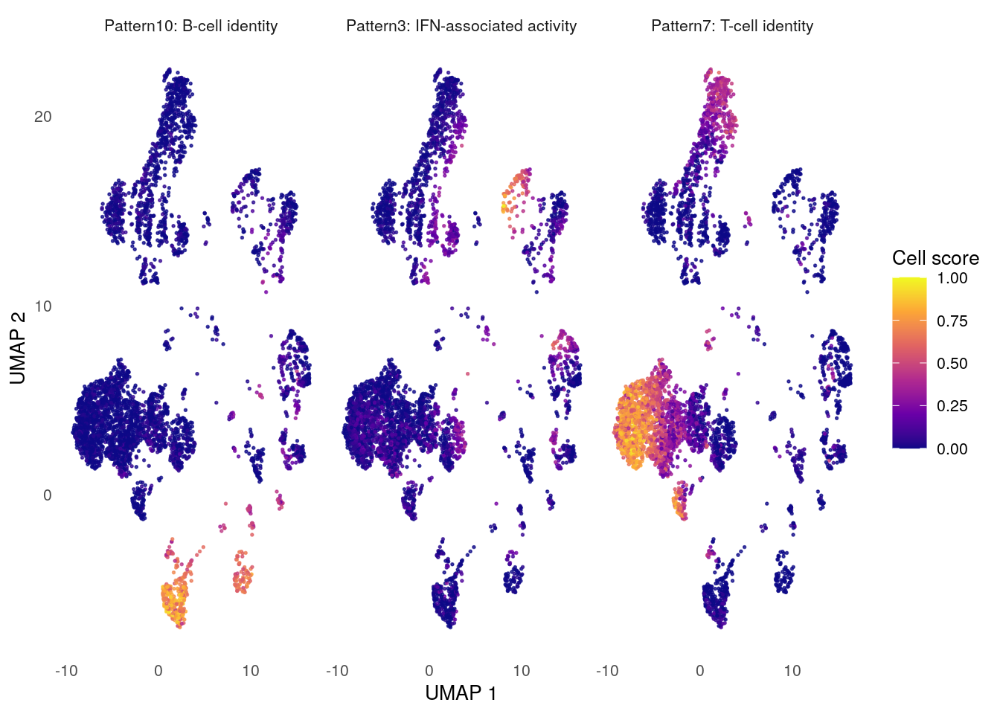
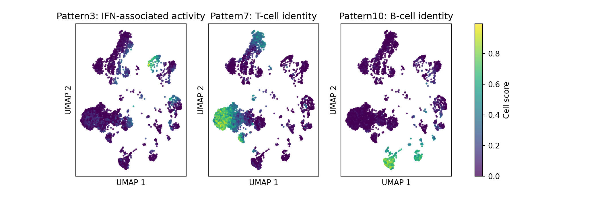

library(here)
library(readr)
library(dplyr)
library(tidyr)
library(ggplot2)
library(knitr)
library(jsonlite)
if (requireNamespace("reticulate", quietly = TRUE) &&
file.exists("/opt/cogaps-venv/bin/python")) {
reticulate::use_python("/opt/cogaps-venv/bin/python", required = FALSE)
}Biomedical Open Case Studies: Discovering Temporal Immune Programs with CoGAPS in Single-Cell Dengue Infection Data
![Five-panel opening roadmap figure. Panel A shows the experimental PBMC discovery time course from D0 through D28 with the late acute D10 to D14 or D15 window highlighted. Panel B shows discovery set composition by timepoint as stacked bars of broad PBMC cell identities. Panel C has two K-selection views: stability versus temporal effect size and a revised goal-aligned K ranking with K equals 10 selected. Panel D shows a heatmap of selected K equals 10 pattern usage across infection days. Panel E shows the Pattern 3 subject-level trajectory and mean late acute peak.](data/processed/figures/figure_00_opening_summary.png)
Key terms
- PBMCs: Peripheral blood mononuclear cells, a mixed population of immune cells isolated from blood. PBMCs include lymphocytes such as T cells, B cells, and natural killer cells, as well as monocytes and related antigen-presenting cells.
- PBMC identity: The relatively stable immune-cell identity of a cell, such as T cell, B cell, natural killer cell, or monocyte. A T cell remains a T cell across the infection time course, even though its gene-expression activity can change.
- IFN: Interferon, an antiviral signaling system that helps coordinate host responses to viral infection.
Disclaimer
The purpose of the Open Case Studies project is to demonstrate the use of various data science methods, tools, and software in the context of messy, real-world data. A given case study does not cover all aspects of the research process, is not claiming to be the most appropriate way to analyze a given data set, and should not be used in the context of making policy decisions or clinical decisions without external consultation from scientific experts. In addition, due to size constraints, datasets used within a case study may be a subset of the original/full dataset.
License information
This work is licensed under the Creative Commons Attribution-NonCommercial 4.0 (CC BY-NC 4.0) United States License unless otherwise noted.
This work is funded through the National Institutes of Health, specifically the National Institute of General Medical Sciences: Grant Number 1R25GM160622.
Data, Runtime, and Reproducibility
The case-study repository contains the source files, website files, scripts, and teaching artifacts needed to reproduce the analyses in this case study. Large raw, preprocessed, model-object, and checkpoint files are uploaded to Zenodo, DOI pending publication.
| Resource | Location | Purpose |
|---|---|---|
| Source single-cell data | GEO accession GSE154386 | Original public data source from Waickman et al. 2021. |
| Case-study source | opencasestudies/ocs-bio-temporal | Source files, included teaching artifacts, scripts, and website output. |
| Large reproduction artifacts | Zenodo draft; DOI pending publication | Optional full-reproduction files, including large H5AD inputs, model objects, checkpoints, and sweep summaries. |
| Runtime image | othomas2/cs5-cogaps-runtime:0.1.0 |
Docker image used for RStudio Server sessions and optional local reproduction. |
To launch the runtime locally, clone the repository, open a terminal in the repository root, and run:
docker run --platform linux/amd64 --rm -it \
-p 8787:8787 \
-e PASSWORD="Password12" \
-v "$PWD":/home/rstudio/project:rw \
othomas2/cs5-cogaps-runtime:0.1.0Then open http://localhost:8787, sign in with username rstudio and password Password12, and copy code from the online case study into the RStudio Server session.
The standard case-study path uses precomputed artifacts so you can focus on interpretation, diagnostics, and reproducible analysis decisions. Full CoGAPS reruns are optional reproduction steps. In the four-thread Docker setup used for this draft, the selected K = 10 R and Python model runs each took about 24 minutes.
To cite this case study, please use:
Thomas, Oshane O. and Wright, Carrie and Isaacs, Kate. (2026). https://github.com/opencasestudies/ocs-bio-temporal. Discovering Temporal Immune Programs with CoGAPS in Single-Cell Dengue Infection Data (Version 0.1.0).
Motivation
Dengue is a mosquito-borne viral disease with a growing global footprint. In its 2024 global dengue update, the World Health Organization reported 14,434,584 dengue cases across all six WHO regions, the highest global burden recorded in WHO surveillance. Dengue risk is shaped by many overlapping factors, including mosquito-vector ecology, urbanization, travel, surveillance capacity, health-system capacity, and climate-sensitive mosquito habitats.

Image source: CBS News, “Maps show dengue fever risk areas as CDC warns of global case surge”.
Dengue surges are not only a question of case counts. As CBS News reported during the 2024 global surge, U.S. health officials warned clinicians to stay alert for dengue as international records were being broken and locally acquired cases appeared in places such as Puerto Rico and Florida. That matters because dengue care is highly time-dependent: clinicians need to recognize possible cases, order appropriate tests, monitor warning signs, and identify patients who may progress to severe dengue.
There is no dengue-specific antiviral treatment, so care depends on supportive management and close monitoring. Public-health response also depends on timing: surveillance, diagnostics, clinical readiness, travel history, and mosquito-control decisions all become more important during surges. In this case study, that public-health timing problem leads to a biological question: how does the immune system change over time during dengue infection?
Blood contains many peripheral blood mononuclear cell, or PBMC, populations at once, including T cells, B cells, natural killer cells, monocytes, and antigen-presenting cells. During infection, each cell still carries its immune-cell identity, but it may also activate antiviral, inflammatory, or recovery-associated transcriptional programs.
That creates the central puzzle. If cells from day 10 look different from cells at baseline, what changed? Did the sample contain different immune-cell populations? Did one subject contribute more strongly than another? Or did similar cell types activate a shared infection-response program over time?
Ordinary clustering is useful for finding groups of similar cells, but it is not always enough for this question. A cell does not have to be only “identity” or only “response.” A monocyte can remain a monocyte while also expressing an interferon-stimulated antiviral program. This case study therefore focuses on latent transcriptional programs: patterns of gene expression that can be shared across cells and vary over time.
The data come from Waickman et al. 2021, who profiled PBMCs from experimental and natural primary dengue virus type 1 infection. The natural infection samples are biologically important and appear later as optional extension material. The main analysis focuses on the experimental infection cohort because dengue-naive adults were sampled along an aligned time course, from baseline through early post-infection, late acute response, and recovery. In the source study, the experimental time course captures an early post-infection period, a day 10 late acute immune-response window, and later day 14/15 changes that may include adaptive or cytotoxic immune activity.
You will use CoGAPS to represent each cell as a non-negative mixture of latent transcriptional programs. The goal is not simply to find a pattern labeled “interferon.” The goal is to learn how to evaluate whether a program is temporal, whether it reflects stable immune-cell identity or dynamic infection activity, and whether the biological interpretation is supported by diagnostics, top genes, and directionality.
Model-rank selection is part of that scientific reasoning. Choosing K, the number of CoGAPS patterns, changes whether broad identity structure and dynamic infection programs are separated or compressed together. In this case study, you will inspect evidence for the selected K = 10 model while using K = 5 as a sensitivity comparison.
These ideas lead directly into the main research questions: which temporal immune programs appear in the experimental dengue time course, which patterns look more like stable PBMC identity versus dynamic infection activity, and which evidence supports an interferon-associated late acute response.
Main Questions
You will use the selected K = 10 CoGAPS model to answer three connected research questions about the experimental dengue infection time course. Each question is paired with the evidence you will inspect later in the case study.
| Research question | Evidence you will inspect | |
|---|---|---|
|
|
Question 1 Which temporal immune programs appear across the experimental dengue time course? |
You will answer this by ranking CoGAPS patterns by temporal variation, then checking pattern-by-day summaries and subject-level trajectories. |
|
|
Question 2 Which programs reflect PBMC identity, dynamic infection activity, or both? |
You will compare variation explained by broad immune-cell type with variation explained by infection day, then inspect top genes and pattern-use heatmaps. |
|
|
Question 3 Which program is most consistent with an interferon-associated late acute response? |
You will combine IFN-score correlation, interferon-stimulated top genes, day 10 and day 14/15 trajectories, and pseudobulk directionality relative to baseline. |
The selected K = 10 model is used for the main answers. The K = 5 model is kept as a sensitivity comparison because it shows how a lower-rank model can compress biologically distinct signals.
Use this evidence map as a guide as you move through the analysis:
| Question | Main evidence | Where it appears |
|---|---|---|
| Question 1: temporal programs | Pattern-by-day summaries, subject-level summaries, temporal effect sizes, and pattern trajectories | Data Analysis |
| Question 2: identity versus activity | Broad-cell-type effect sizes, timepoint effect sizes, top genes, and pattern heatmaps | Data Analysis |
| Question 3: IFN-associated response | IFN-score correlation, IFN-stimulated top genes, late acute trajectory, and pseudobulk directionality | Data Analysis |
Learning Objectives
By the end of this case study, you will be able to analyze longitudinal single-cell RNA-seq data from experimental dengue virus infection using CoGAPS, a Bayesian non-negative matrix factorization method.
You may work through the analysis in R or Python. The case study uses precomputed teaching artifacts for the required path, so the focus is on importing, summarizing, visualizing, and interpreting the selected model rather than waiting for a full CoGAPS run. If you want to reproduce the full model run, you can download the large reproduction files from the Zenodo record and run the provided scripts inside the case-study Docker image.
The objectives are organized into data science/bioinformatics, statistical/modeling, and biological/topical goals.
Data Science/Bioinformatics Learning Objectives:
- Import selected-model CoGAPS artifacts, metadata tables, diagnostics, and manifest files in R or Python.
- Summarize cell-level pattern scores, gene-level loadings, and run diagnostics as tidy analysis tables.
- Join CoGAPS cell scores to subject, timepoint, and broad immune-cell-type annotations.
- Create reproducible summaries and visualizations from small teaching artifacts included with the case study.
- Explain which artifacts are included with the case study and which large reproduction files belong in the Zenodo archive.
Statistical and Modeling Learning Objectives:
- Interpret CoGAPS as two linked non-negative matrices: gene weights and cell pattern scores.
- Evaluate rank selection using stability, redundancy, temporal signal, interpretability, and biological plausibility rather than a single metric.
- Justify why the selected
K = 10model is used for the main analysis whileK = 5is retained as a sensitivity comparison. - Read convergence and stability diagnostics such as chi-square traces, atom traces, snapshot counts, runtime, and total-update summaries.
- Distinguish a high non-negative pattern score from gene-expression direction.
- Use pseudobulk directionality analysis to evaluate whether top pattern genes increase or decrease relative to baseline.
Biological/Topical Learning Objectives:
- Describe the experimental and natural DENV-1 PBMC cohorts in Waickman et al. 2021 and explain why the experimental cohort is the primary discovery set.
- Recognize the difference between immune-cell identity programs and infection-response activity programs in single-cell PBMC data.
- Interpret temporal immune programs using top genes, time-course behavior, broad cell-type context, and subject-level summaries.
- Identify evidence for an interferon-stimulated antiviral transcriptional program using top genes, pathway knowledge, time-course behavior, and directionality evidence.
- Evaluate whether later time-course patterns may be consistent with adaptive, cytotoxic, or plasmablast-related immune activity without treating those labels as guaranteed findings.
- Explain why this analysis is a host-response analysis rather than a direct infected-cell atlas.
- Discuss limitations created by small subject numbers, changing cell composition, teaching-subset construction, and model-rank sensitivity.
Objectives Map
| Objective area | You will practice this by… | Main section |
|---|---|---|
| Data import and artifacts | Importing selected-model tables, diagnostics, and manifest files in R or Python | Data Import |
| Pattern summaries | Joining cell scores to metadata and summarizing patterns by timepoint, subject, and broad cell type | Data Wrangling and Preprocessing |
| Rank selection | Evaluating why K = 10 is used for the main model while K = 5 remains a sensitivity comparison |
Data Visualization; Data Analysis |
| Diagnostics | Reading convergence, stability, runtime, and trace summaries before interpreting model output | Data Analysis |
| Temporal biology | Interpreting which programs vary over the dengue time course and which appear identity-like, activity-like, or mixed | Data Analysis |
| IFN evidence | Combining top genes, IFN-score correlation, trajectory, and directionality evidence for the late acute response | Data Analysis |
| Limitations and extensions | Distinguishing confirmed results, sensitivity comparisons, and optional natural-cohort projection plans | Summary; Suggested Homework or Further Exploration |
In this section, you will load the packages used for the required analysis path. This path uses precomputed teaching artifacts included in the repository, so you can focus on importing, summarizing, visualizing, and interpreting the selected model. If you want to reproduce the full CoGAPS runs, the same Docker image also contains the larger R and Python packages needed for that optional workflow.
If you are using Docker, launch the runtime using the command in the Data, Runtime, and Reproducibility block near the top of the page. Then open RStudio Server and run either the R or Python setup tab below.
from pathlib import Path
import json
import pandas as pd
import matplotlib.pyplot as pltThe R and Python tabs are alternate ways to complete the same required analysis. You do not need to run both languages unless you want to inspect both examples.
| Package | Language | Role | Use |
|---|---|---|---|
here |
R | Required analysis | Build project-relative paths. |
readr |
R | Required analysis | Read CSV tables used by the R code. |
dplyr |
R | Required analysis | Select, filter, summarize, and arrange analysis tables. |
tidyr |
R | Required analysis | Reshape pattern summaries into long and wide forms. |
ggplot2 |
R | Required analysis | Build visualizations from tidy tables. |
knitr |
R | Required analysis | Render tables in the case-study document. |
jsonlite |
R | Required analysis | Read run manifests and diagnostic JSON files. |
reticulate |
R | Optional bridge | Connect R to the Python environment inside the Docker image. |
pandas |
Python | Required analysis | Read, filter, and summarize CSV tables. |
matplotlib |
Python | Required analysis | Build Python visualizations. |
CoGAPS |
R | Optional full reproduction | Run the R implementation of CoGAPS. |
PyCoGAPS |
Python | Optional full reproduction | Run the Python implementation of CoGAPS. |
scanpy |
Python | Optional full reproduction | Preprocess and inspect single-cell objects. |
anndata |
Python | Optional full reproduction | Read and write H5AD single-cell objects. |
You can verify the runtime with these lightweight checks:
r_required <- c("here", "readr", "dplyr", "tidyr", "ggplot2", "knitr", "jsonlite")
r_versions <- vapply(
r_required,
function(pkg) as.character(utils::packageVersion(pkg)),
character(1)
)
data.frame(
item = c("R", r_required, "reticulate_available", "CoGAPS_available"),
value = c(
R.version.string,
unname(r_versions),
as.character(requireNamespace("reticulate", quietly = TRUE)),
as.character(requireNamespace("CoGAPS", quietly = TRUE))
)
) |>
knitr::kable()| item | value |
|---|---|
| R | R version 4.3.2 (2023-10-31) |
| here | 1.0.1 |
| readr | 2.1.5 |
| dplyr | 1.1.4 |
| tidyr | 1.3.1 |
| ggplot2 | 4.0.3 |
| knitr | 1.48 |
| jsonlite | 1.8.8 |
| reticulate_available | TRUE |
| CoGAPS_available | TRUE |
import importlib.util
import sys
import matplotlib
pd.DataFrame(
{
"item": [
"Python",
"pandas",
"matplotlib",
"PyCoGAPS_available",
"scanpy_available",
"anndata_available",
],
"value": [
sys.version.split()[0],
pd.__version__,
matplotlib.__version__,
str(importlib.util.find_spec("PyCoGAPS") is not None),
str(importlib.util.find_spec("scanpy") is not None),
str(importlib.util.find_spec("anndata") is not None),
],
}
) item value
0 Python 3.10.12
1 pandas 2.0.3
2 matplotlib 3.7.3
3 PyCoGAPS_available True
4 scanpy_available True
5 anndata_available TrueThe required-analysis packages should be available in whichever language you choose. The optional reproduction packages are checked here so you can confirm that the Docker image is also ready for full model reruns.
When a function is introduced for the first time, the prose uses the package::function() form so you can see which package provides it. Next, you will import the precomputed teaching artifacts and inspect the files that carry the selected K = 10 model results through the rest of the case study.
Context and Background
Dengue Infection and PBMC Host Response
Dengue virus, often abbreviated DENV, is a mosquito-borne RNA virus that can trigger a systemic immune response. In this case study, you will not try to identify which cells are infected by the virus. Instead, you will study how immune cells in blood change their gene-expression activity over time after primary DENV-1 exposure.
Peripheral blood mononuclear cells, or PBMCs, are a mixed population of immune cells isolated from blood. They include T cells, B cells, natural killer cells, monocytes, and related antigen-presenting cells. That mixture is useful for studying host response, but it also creates a modeling challenge: a single-cell dataset contains stable cell identities and dynamic infection responses at the same time.
For example, a monocyte can remain a monocyte while also activating interferon-stimulated genes. A T cell or natural killer cell can retain its lineage markers while also showing activation or cytotoxic activity. This is the biological reason the case study focuses on latent transcriptional programs rather than only on cell clusters.
What the Source Study Found
The data come from Waickman et al. 2021, who profiled PBMCs from experimental and natural primary DENV-1 infections using single-cell RNA sequencing. The source study captured 171,208 high-quality cells and annotated major leukocyte populations across both study arms.
Several source-study findings are important background for this case study:
- the experimental infection cohort was sampled at aligned study days
D0,D2,D4,D6,D8,D10,D14/15, andD28 - a consistent experimental transcriptional response became strongest at
D10, especially in monocytes, a broad class of immune cells that often respond strongly to inflammation - among monocytes, the source study highlighted conventional monocytes and
CD16himonocytes;CD16himeans the cells have high expression ofCD16, a molecular label on the cell surface that is often used to distinguish monocyte subtypes - many genes that increased during the
D10toD14/15window were interferon-stimulated or inflammation-associated genes; in plain language, these are genes turned on as part of antiviral signaling and immune alarm responses - examples of these antiviral or inflammatory genes included
IFITM1,IFI6,ISG15,MX1,TRIM22, andLY6E - activated T-cell and plasmablast-like B-cell populations expanded in the experimental cohort around
D14/15; this means the source study observed later changes in immune cells associated with lymphocyte activation and antibody-producing B-cell states - no cell-associated
DENV-1RNA was detected in PBMCs in either the experimental or natural infection samples
These points explain why this case study treats the experimental cohort as the primary temporal discovery set. The aligned experimental days let you ask which programs rise, peak, and return toward baseline. The natural infection cohort is biologically valuable, but its acute samples are not aligned to the same controlled post-challenge days.
Why Latent Programs Are Useful
Ordinary clustering is often one of the first useful steps in single-cell analysis. It groups cells that have similar overall gene expression, which can help you annotate broad cell types, check whether expected immune-cell populations are present, and compare cell composition across timepoints.
However, clustering mainly asks which cells are most similar to each other overall. The research questions in this case study ask something more layered: whether repeated gene-expression programs appear across cells, subjects, and infection days.
A gene-expression program is a coordinated pattern of genes that tend to vary together across cells. Some programs reflect stable immune-cell identity, such as genes that are characteristic of T cells or monocytes. Other programs reflect biological activity, such as antiviral signaling, inflammation, cytotoxic activity, or antibody-producing B-cell states.
A latent program is a gene-expression program inferred from many genes and many cells together, rather than a directly measured variable in the data table. In this case study, a useful latent program might look identity-like, such as a T-cell or monocyte program, activity-like, such as a time-varying interferon response, or mixed, where cell identity and infection timing both matter.
This framing is common in single-cell analysis because a cell can participate in more than one program. CoGAPS is useful here because it represents each cell as a non-negative mixture of patterns rather than forcing each cell into only one category.
What Is Non-negative Matrix Factorization?
Single-cell RNA-seq data are often organized as a matrix. In this case study, the rows represent genes, the columns represent cells, and each entry is a non-negative expression value for one gene in one cell.
Non-negative matrix factorization, or NMF, asks whether that large matrix can be approximated by multiplying two smaller non-negative matrices. At the intuition level:
observed expression matrix ≈ gene loadings × cell scoresMore formally:
\[ D \approx A P \]
Here, D is the observed expression matrix, A is a gene-by-pattern matrix, and P is a pattern-by-cell matrix. The model is trying to describe many genes and many cells using a smaller number of latent patterns.
| Object | Rows | Columns | How to read it |
|---|---|---|---|
Expression matrix D |
genes | cells | The observed input data after preprocessing and orientation checks. |
A matrix |
genes | patterns | Gene loadings. Large values indicate genes that help define a pattern. |
P matrix |
patterns | cells | Cell scores. Large values indicate cells that strongly use a pattern. |
Rank K |
model setting | number of patterns | The number of latent programs the model is asked to learn. |
If D has G genes and C cells, and the model is asked to learn K patterns, then A has G rows and K columns, while P has K rows and C columns. For one gene g and one cell c, the approximation can be read as:
expression for gene g in cell c ≈ sum of that cell's K pattern contributionsThe formal version writes that sum as:
\[ D_{g,c} \approx \sum_{k=1}^{K} A_{g,k} P_{k,c} \]
In plain language, this says that the expression of a gene in a cell is approximated by adding up that gene’s contribution to each pattern multiplied by how strongly that cell uses each pattern.
The word non-negative matters. The entries in A and P are constrained to be zero or positive. This means patterns add together rather than cancel each other out. That additive structure fits the PBMC setting: a cell can carry a stable immune-cell identity signal and a dynamic infection-response signal at the same time.
Many NMF methods are framed as finding non-negative matrices that reconstruct the observed data with small error. At the intuition level, the fitting goal is:
choose A and P so the reconstructed matrix AP is close to the observed matrix DA common formal objective is:
\[ \underset{A \geq 0,\;P \geq 0}{\text{minimize}}\; \lVert D - AP \rVert_F^2 \]
The double bars are a compact way to measure the total reconstruction error across all genes and cells. You do not need to compute this objective by hand. The important idea is that the model is balancing compression and reconstruction: it tries to summarize a large expression matrix with a smaller set of patterns while still preserving meaningful structure in the data.
This is also why the rank, written as K, matters. If K is too small, different biological signals may be compressed into the same pattern. If K is too large, the model may split signal into patterns that are harder to interpret or less stable. Later in the case study, you will inspect why K = 10 was selected for the main model and why K = 5 remains useful as a compact sensitivity comparison.
The references behind this overview are listed in the Additional Information section.
Why CoGAPS?
CoGAPS is the specific NMF-family method used in this case study. It keeps the additive, non-negative structure described above, but fits the model using a Bayesian framework designed for genomic data.
That matters because single-cell data are noisy, sparse, and high-dimensional. Rather than treating one fitted factorization as automatically meaningful, CoGAPS uses a sampling-based model to estimate patterns and supports diagnostics that help you decide whether a run is stable enough to interpret.
In the selected model, you will interpret the same two linked outputs introduced above: gene loadings from the A matrix and cell scores from the P matrix. The analysis section then asks whether those outputs are biologically coherent by checking top genes, pattern trajectories, broad cell-type summaries, convergence diagnostics, and directionality relative to baseline.
This case study builds on three related uses of CoGAPS-style analyses: temporal CoGAPS for interpreting time-course transcriptional patterns, single-cell CoGAPS for identifying latent programs across cells, and projectR-style projection for asking whether learned patterns appear in another dataset.
How to Interpret Pattern Labels
Pattern numbers are labels assigned by a model run. The biological interpretation is not the number itself. In the selected R and Python K = 10 runs used here, the strongest interferon-associated activity program is Pattern3. In other runs or other ranks, a similar biological program may receive a different number.
For that reason, the case study emphasizes annotations, top genes, trajectories, diagnostics, and directionality checks rather than treating pattern numbers as universal names. A pattern becomes “IFN-associated” because its genes and time course are consistent with interferon biology, not because it has a particular numeric label.
CoGAPS also does not directly say whether genes are upregulated or downregulated. The A and P matrices are non-negative, so they show association with a pattern. To ask whether top genes are higher than baseline at a peak timepoint, the case study uses a separate subject-level pseudobulk directionality check.
Identity-Like, Activity-Like, and Mixed Programs
You will see three interpretation categories later in the analysis:
- Identity-like programs: patterns whose scores vary mostly by broad immune-cell type, such as T cell, monocyte, B cell, or plasmablast.
- Activity-like programs: patterns whose scores vary mostly by infection day, suggesting a dynamic response over time.
- Mixed programs: patterns where both cell identity and timepoint contribute to the signal.
These labels are interpretation aids, not ground truth. They help you decide what evidence to inspect next: cell-type summaries, pattern-by-day trajectories, top genes, and directionality relative to baseline.
Projection as an Optional Extension
Once a set of patterns has been learned in one dataset, a transfer-learning workflow can ask whether those patterns are also detectable in another dataset. This idea appears in single-cell CoGAPS and projectR-style analyses: learn patterns in a discovery dataset, then project or score related samples against those learned patterns.
For this case study, the experimental cohort is the discovery dataset. The natural infection cohort is reserved for optional projection material because it asks a different question: whether programs learned from the aligned experimental time course appear in naturally acquired infection.
Key terms
- PBMC: Peripheral blood mononuclear cell, a blood-derived immune cell such as a T cell, B cell, natural killer cell, monocyte, or related antigen-presenting cell.
- IFN: Interferon, an antiviral signaling system that can induce interferon-stimulated genes during viral infection.
- Interferon-stimulated genes: Genes whose expression can increase when cells receive interferon signals. These genes often help cells enter an antiviral state.
- Inflammation-associated genes: Genes linked to immune alarm, communication, and stress responses during infection or tissue injury.
- Monocyte: A PBMC immune-cell type that can respond strongly to infection and inflammation. Monocytes can be divided into subtypes, including conventional and
CD16himonocytes. - Activated T cell: A T cell showing signs of immune activation, often meaning it has received signals to respond more strongly.
- Plasmablast-like B cell: A B-cell state related to antibody production. Plasmablast-like cells can appear as part of an adaptive immune response.
- Gene-expression program: A coordinated pattern of genes that tend to vary together across cells, often reflecting cell identity, biological activity, or both.
- Non-negative matrix factorization: A method that approximates one non-negative matrix as the product of two smaller non-negative matrices.
- Reconstruction error: A measure of how different the observed matrix is from the matrix reconstructed by a factorization model.
- Latent program: An inferred gene-expression pattern shared across genes and cells, rather than a directly measured variable.
- Gene loading: A value in the CoGAPS
Amatrix that shows how strongly a gene contributes to a pattern. - Cell score: A value in the CoGAPS
Pmatrix that shows how strongly a cell uses a pattern. - Rank
K: The number of patterns CoGAPS is asked to learn. - Projection: A transfer-learning step that scores a new dataset using patterns learned from a discovery dataset.
With these concepts in place, the next section describes the actual data objects used in the case study: where the source data came from, which cohort is used for discovery, and which precomputed artifacts carry the selected model through the analysis.
What Are the Data?
In this section, you will connect the original public study to the smaller case-study files used for the required analysis. The goal is to know which data layer you are using before you import, summarize, or interpret any CoGAPS results.
The source data come from GEO accession GSE154386, associated with Waickman et al. 2021. The study used a 10x Genomics 5-prime single-cell RNA-seq workflow to profile unfractionated peripheral blood mononuclear cells, or PBMCs. Unfractionated means the immune-cell mixture was measured together rather than first being sorted into one purified immune-cell type. In practice, T cells, B cells, natural killer cells, monocytes, and related antigen-presenting cells enter the analysis together.
This design is useful for studying host response, but it also means that cell identity and infection-response activity are mixed in the same expression matrix. The original study also includes natural infection samples; those are biologically important, but they are reserved here for optional projection material rather than the required case-study path.
| Data layer | What it contains | Role in this case study |
|---|---|---|
| Original public source data | Raw 10x single-cell files from GEO accession GSE154386. |
Public provenance for the full Waickman et al. 2021 study. |
| Experimental infection cohort | Three dengue-naive adults sampled at aligned study days D0, D2, D4, D6, D8, D10, D14/15, and D28. |
Primary temporal discovery cohort for the required analysis. |
| Balanced teaching dataset | A subset of the experimental cohort with 4,800 cells and 5,000 highly variable genes. | CoGAPS input summarized by the case-study files included here. |
| Selected-model files | Selected K = 10 R and Python outputs, K-selection summaries, directionality tables, and figures. |
Required case-study path for importing, visualizing, diagnosing, and interpreting the selected model. |
| Zenodo reproduction files | Large raw, preprocessed, model-object, and checkpoint files. | Optional full reproduction path for learners who want to rerun preprocessing or CoGAPS locally. |
The timeline labels use D for experimental study day. For example, D0 is day 0, D10 is day 10, and D14/15 combines samples collected around days 14 and 15.
From Source Data to the Teaching Dataset
The teaching dataset is not a separate biological study. It is a smaller, traceable representation of the source data and selected CoGAPS model. The transformation has two parts.
First, the source data are prepared for modeling:
- Download the public
GSE154386raw 10x files from GEO. - Build single-cell objects and attach sample metadata.
- Apply quality control, normalization, and highly variable gene selection.
- Annotate broad immune-cell identities for interpretation.
- Construct a balanced experimental discovery subset.
Then, the selected model results are prepared for this case study:
- Run and diagnose the selected
K = 10CoGAPS model. - Export small tables and figures used in the case study.
The full raw and preprocessed files are too large for our purposes here, so the main analysis starts from smaller case-study files already included in this repository. The Data Wrangling and Preprocessing section returns to these steps in more detail, introduces the full preprocessing scripts, and explains the choices behind quality control, normalization, feature selection, annotation, and subsetting. You do not need to run that full workflow to complete the required case study, but you should understand how the teaching dataset was produced.
Because the case study uses several related files, the row meaning changes from table to table:
| File type | What one row represents | How you will use it |
|---|---|---|
| Single-cell expression matrices | One cell, with genes represented as columns or matrix features. | Optional reproduction and model input preparation. |
| Discovery cell-score files | One discovery-set cell with metadata and Pattern1 to Pattern10 scores. |
Cell-level summaries and broad pattern visualization. |
| Subject-timepoint summaries | One subject, timepoint, and pattern. | Repeated-sampling interpretation of temporal trajectories. |
| Gene-loading and top-gene files | One gene-pattern entry, often with a rank and weight. | Biological interpretation of each CoGAPS pattern. |
| Pattern summary tables | One CoGAPS pattern. | Ranking temporal variation, identity/activity structure, and IFN association. |
| Diagnostic traces and metrics | One trace point or one run-level summary record. | Checking model runtime, convergence diagnostics, and selected-model settings. |
The next code chunk reads data/artifact_manifest.json to show which small files are included here and which larger files belong to the Zenodo reproduction archive.
manifest <- jsonlite::fromJSON(here::here("data", "artifact_manifest.json"))
data.frame(
file_group = c("Included case-study files", "Zenodo reproduction files"),
file_count = c(nrow(manifest$copied), nrow(manifest$skipped)),
size_mb = c(
round(sum(manifest$copied$size_bytes) / 1024^2, 2),
round(sum(manifest$skipped$size_bytes) / 1024^2, 2)
)
) |>
knitr::kable()| file_group | file_count | size_mb |
|---|---|---|
| Included case-study files | 141 | 29.20 |
| Zenodo reproduction files | 8 | 316.32 |
import json
import pandas as pd
with open("data/artifact_manifest.json") as f:
manifest_py = json.load(f)
pd.DataFrame({
"file_group": [
"Included case-study files",
"Zenodo reproduction files",
],
"file_count": [
len(manifest_py["copied"]),
len(manifest_py["skipped"]),
],
"size_mb": [
round(sum(x["size_bytes"] for x in manifest_py["copied"]) / 1024**2, 2),
round(sum(x["size_bytes"] for x in manifest_py["skipped"]) / 1024**2, 2),
],
}) file_group file_count size_mb
0 Included case-study files 141 29.20
1 Zenodo reproduction files 8 316.32The included case-study files contain selected-model outputs, K-selection tables, directionality summaries, implementation diagnostics, and figures. The Zenodo reproduction files include larger H5AD inputs, RDS model objects, raw/preprocessed objects, and checkpoint files. The manifest at data/artifact_manifest.json records which files are included with the case study and which belong to the larger reproduction archive.
Teaching Discovery Set
The core CoGAPS analysis uses a balanced experimental discovery set rather than the entire published single-cell atlas. This teaching discovery set contains 4,800 cells and 5,000 highly variable genes. Each experimental timepoint contributes 600 cells, so the selected model is not dominated by a single high-yield sample.
This balancing choice supports clearer pattern comparison across timepoints. It should not be used to estimate the true abundance of each immune-cell type in the original study population.
composition <- readr::read_csv(
here::here("data", "processed", "figures", "source_tables",
"figure_02_discovery_set_composition_source.csv"),
show_col_types = FALSE
)
composition |>
group_by(timepoint_merged) |>
summarize(n_cells = sum(n_cells), .groups = "drop") |>
knitr::kable()| timepoint_merged | n_cells |
|---|---|
| D0 | 600 |
| D10 | 600 |
| D14/15 | 600 |
| D2 | 600 |
| D28 | 600 |
| D4 | 600 |
| D6 | 600 |
| D8 | 600 |
composition_py = pd.read_csv(
"data/processed/figures/source_tables/"
"figure_02_discovery_set_composition_source.csv"
)
composition_py.groupby("timepoint_merged", as_index=False)["n_cells"].sum() timepoint_merged n_cells
0 D0 600
1 D10 600
2 D14/15 600
3 D2 600
4 D28 600
5 D4 600
6 D6 600
7 D8 600The table above counts cells, not independent people. A cell is the row-level observation used for expression summaries and CoGAPS pattern scores. The biological design, however, is anchored by subjects and their repeated timepoints.
Independence and repeated sampling
Single cells are not independent biological replicates. Many cells come from the same subject at the same experimental day. You will use cell-level summaries to visualize patterns, but the biological interpretation should also consider subject-level trajectories and repeated sampling over time.
Data Dictionary
The columns below appear repeatedly in the import, wrangling, visualization, and analysis sections.
| Column or term | Meaning | Why it matters |
|---|---|---|
subject |
Experimental participant identifier, such as Subject2. |
Links cells back to the biological person sampled over time. |
sample_id |
GEO sample identifier for a specific sample. | Tracks the source sample used to build the teaching subset. |
timepoint_merged |
Display label for the experimental day, such as D0, D10, or D14/15. |
Defines the temporal axis used in figures and summaries. |
day_merged_numeric |
Numeric version of the timepoint, with D14/15 represented as 14.5. |
Lets plots and summaries order the time course correctly. |
broad_cell_type |
Broad immune-cell identity, such as T_cell, Monocyte, or B_cell. |
Helps distinguish cell-identity structure from infection-response activity. |
n_cells |
Number of cells in a group. | Shows how much cell-level evidence contributes to a summary. |
fraction |
Proportion of cells in a timepoint or group. | Helps compare cell composition across days. |
Pattern1 to Pattern10 |
CoGAPS pattern scores for the selected K = 10 model. |
Larger values mean stronger activity of that pattern in a cell or group. |
pattern |
Pattern label used in long-format summaries. | Lets you compare results pattern by pattern. |
gene |
Gene symbol in a pattern or directionality table. | Connects model patterns to biological interpretation. |
weight |
CoGAPS gene loading for a pattern. | Larger values indicate genes that contribute more strongly to that pattern. |
eta_timepoint |
Fraction of pattern-score variation explained by experimental timepoint. | Helps rank patterns by temporal structure. |
eta_broad_cell_type |
Fraction of pattern-score variation explained by broad immune-cell type. | Helps distinguish identity-like programs from activity-like programs. |
spearman_ifn_score_rho |
Spearman correlation between a pattern score and an interferon-program score. | Supports evaluation of IFN-associated patterns. |
candidate_ifn_pattern |
Logical flag marking patterns that meet the IFN-candidate rule used in the case study. | Identifies patterns that deserve closer biological inspection. |
log2FC |
Log2 fold change from a pseudobulk directionality comparison. | Indicates whether selected genes are higher or lower relative to baseline. |
direction |
Direction label derived from log2FC, such as up, down, or unchanged. |
Adds up/down regulation context that CoGAPS weights alone do not encode. |
Now that you know the data layers, design units, and key columns, the next sections import the case-study files and inspect the tables that carry the selected CoGAPS model through the analysis.
Limitations
This case study is designed for teaching. The results are useful for learning how to reason about latent factors in single-cell data, but several limitations matter.
- Small experimental cohort: the primary time course has three experimental subjects. Subject-level summaries are essential, but they do not replace a larger cohort.
- Teaching subset: the CoGAPS discovery set is balanced and tractable for learner-facing analysis. It is not the full published atlas.
- Model-rank sensitivity:
K = 5is highly stable and compact, but it compresses temporal activity into broader patterns.K = 10better matches the case-study goal by resolving an IFN-associated activity program while remaining on the stability plateau. - Pattern labels are run-specific: learners should interpret pattern biology from genes, time course, cell type usage, and diagnostics rather than from pattern numbers alone.
- CoGAPS is non-negative: a high pattern score does not tell us whether genes are upregulated or downregulated relative to baseline. Directionality requires a separate comparison.
- Natural projection is optional: projection into the natural infection cohort is biologically motivated, but it should remain an optional extension until the final
K = 10projection workflow is regenerated and validated. - Host response, not viral tropism: the source study reported no cell-associated DENV-1 RNA in PBMCs. This analysis concerns host immune programs, not direct identification of infected cells.
Bioethics, Data Use, and Interpretation Cautions
This case study uses publicly available human single-cell RNA-seq data from GEO. Learners should still treat the data as human-subjects-derived research data and interpret results with care.
Important cautions:
- The case study should not be used to make clinical decisions or policy claims.
- The discovery set is a teaching subset and does not capture all possible variation in the full study.
- Patterns are latent statistical summaries, not direct measurements of immune pathways.
- A pattern annotated as interferon-associated is supported by top genes, correlation with an IFN score, timing, and directionality, but it is still an interpretation.
- Subject-level variation should be shown whenever possible so that learners do not confuse large numbers of cells with large numbers of independent people.
- Public data reuse should cite the original study, the GEO accession, and any software used in the analysis.
Data Import
In this section, you will import the analysis-ready files used in the required case-study path. These files are small CSV and JSON files that are already included with the case study.
A CSV file is a rectangular table: rows are observations or summaries, and columns are variables. A JSON file stores structured metadata, such as model settings or diagnostic values. In R, the imported files become data frames. In Python, they become tables managed by pandas.
The raw GEO archive, GSE154386_RAW.tar, is not imported here. Downloading that file starts the optional full preprocessing workflow: extract 10x files, build single-cell objects, perform quality control, normalize counts, select genes, annotate broad cell types, and construct the discovery subset. That workflow is covered in Data Wrangling and Preprocessing. Here, you will import the selected-model files needed for the main analysis.
| File family | Example file | What one row means | Why you import it |
|---|---|---|---|
| Pattern summary | RQ1_time_varying_patterns.csv |
One CoGAPS pattern. | Rank patterns by temporal variation and IFN association. |
| Top-gene table | cogaps_K10_seed2_iter2000.top_genes.csv |
One gene-pattern entry. | Inspect which genes define each pattern. |
| Run metrics | cogaps_K10_seed2_iter2000.metrics.json |
One model run summary. | Confirm K, seed, iterations, runtime, and diagnostic settings. |
| Diagnostic trace | cogaps_K10_seed2_iter2000.trace.csv |
One saved trace point during the model run. | Check convergence-related traces before interpretation. |
The larger files needed to rerun CoGAPS from scratch are intentionally external:
- raw GEO download:
GSE154386_RAW.tar - preprocessed H5AD cache
- experimental discovery H5ADs
- RDS model objects
- checkpoint files
These files are documented in data/artifact_manifest.json and are distributed through Zenodo for full reproduction.
Import the Selected-Model Results
Before importing data, build paths relative to the project root. Project-relative paths make the same code work on different computers and inside the Docker runtime.
In R, here::here() builds a path from the project root. readr::read_csv() reads a CSV table, and jsonlite::fromJSON() reads a JSON file.
# Build paths to the selected K = 10 R files.
r_selected_dir <- here::here(
"data", "processed", "selected_model_k10", "r"
)
r_import_plan <- data.frame(
file_role = c(
"pattern summary",
"top genes",
"run metrics",
"diagnostic trace"
),
file_name = c(
"RQ1_time_varying_patterns.csv",
"cogaps_K10_seed2_iter2000.top_genes.csv",
"cogaps_K10_seed2_iter2000.metrics.json",
"cogaps_K10_seed2_iter2000.trace.csv"
)
)
r_import_plan$relative_path <- file.path(
"data", "processed", "selected_model_k10", "r",
r_import_plan$file_name
)
r_import_plan$file_exists <- file.exists(
file.path(here::here(), r_import_plan$relative_path)
)
r_import_plan |>
select(file_role, relative_path, file_exists) |>
knitr::kable()| file_role | relative_path | file_exists |
|---|---|---|
| pattern summary | data/processed/selected_model_k10/r/RQ1_time_varying_patterns.csv | TRUE |
| top genes | data/processed/selected_model_k10/r/cogaps_K10_seed2_iter2000.top_genes.csv | TRUE |
| run metrics | data/processed/selected_model_k10/r/cogaps_K10_seed2_iter2000.metrics.json | TRUE |
| diagnostic trace | data/processed/selected_model_k10/r/cogaps_K10_seed2_iter2000.trace.csv | TRUE |
# Read selected-model tables and metadata.
r_rq1 <- readr::read_csv(
file.path(r_selected_dir, "RQ1_time_varying_patterns.csv"),
show_col_types = FALSE
)
r_top_genes <- readr::read_csv(
file.path(r_selected_dir, "cogaps_K10_seed2_iter2000.top_genes.csv"),
show_col_types = FALSE
)
r_model_metrics <- jsonlite::fromJSON(
file.path(r_selected_dir, "cogaps_K10_seed2_iter2000.metrics.json")
)
r_trace <- readr::read_csv(
file.path(r_selected_dir, "cogaps_K10_seed2_iter2000.trace.csv"),
show_col_types = FALSE
)
data.frame(
imported_object = c("r_rq1", "r_top_genes", "r_trace"),
rows = c(nrow(r_rq1), nrow(r_top_genes), nrow(r_trace)),
columns = c(ncol(r_rq1), ncol(r_top_genes), ncol(r_trace)),
first_columns = c(
paste(head(names(r_rq1), 5), collapse = ", "),
paste(head(names(r_top_genes), 4), collapse = ", "),
paste(head(names(r_trace), 4), collapse = ", ")
)
) |>
knitr::kable()| imported_object | rows | columns | first_columns |
|---|---|---|---|
| r_rq1 | 10 | 13 | pattern, kruskal_time_stat, kruskal_time_p, eta_timepoint, eta_broad_cell_type |
| r_top_genes | 500 | 4 | pattern, rank, gene, weight |
| r_trace | 40 | 4 | trace_index, chisq, atomsA, atomsP |
# Confirm that the imported files describe the expected selected model.
data.frame(
check = c(
"model rank K",
"seed",
"iterations",
"CoGAPS threads",
"number of pattern rows",
"patterns represented in top-gene table",
"diagnostic trace length"
),
value = c(
r_model_metrics$K,
r_model_metrics$seed,
r_model_metrics$n_iter,
r_model_metrics$nThreads,
nrow(r_rq1),
length(unique(r_top_genes$pattern)),
nrow(r_trace)
)
) |>
knitr::kable()| check | value |
|---|---|
| model rank K | 10 |
| seed | 2 |
| iterations | 2000 |
| CoGAPS threads | 4 |
| number of pattern rows | 10 |
| patterns represented in top-gene table | 10 |
| diagnostic trace length | 40 |
The imported R objects are now available for later sections. For example, this preview shows the most time-varying patterns in the selected model.
r_rq1 |>
select(pattern, eta_timepoint, peak_timepoint,
spearman_ifn_score_rho, candidate_ifn_pattern) |>
arrange(desc(eta_timepoint)) |>
head(5) |>
knitr::kable(digits = 3)| pattern | eta_timepoint | peak_timepoint | spearman_ifn_score_rho | candidate_ifn_pattern |
|---|---|---|---|---|
| Pattern3 | 0.454 | D10 | 0.756 | TRUE |
| Pattern5 | 0.021 | D14/15 | -0.012 | FALSE |
| Pattern1 | 0.019 | D6 | -0.074 | FALSE |
| Pattern4 | 0.010 | D14/15 | -0.088 | FALSE |
| Pattern10 | 0.009 | D0 | -0.175 | FALSE |
In Python, pathlib.Path() builds project-relative paths. pandas.read_csv() reads CSV tables, and json.load() reads a JSON file.
from pathlib import Path
import json
import pandas as pd
py_selected_dir = Path("data/processed/selected_model_k10/python")
py_import_plan = pd.DataFrame({
"file_role": [
"pattern summary",
"top genes",
"run metrics",
"diagnostic trace",
],
"file_name": [
"RQ1_time_varying_patterns.csv",
"cogaps_K10_seed2_iter2000.top_genes.csv",
"cogaps_K10_seed2_iter2000.metrics.json",
"cogaps_K10_seed2_iter2000.trace.csv",
],
})
py_import_plan["relative_path"] = py_import_plan["file_name"].map(
lambda name: str(py_selected_dir / name)
)
py_import_plan["file_exists"] = py_import_plan["relative_path"].map(
lambda path: Path(path).exists()
)
py_import_plan.loc[:, ["file_role", "relative_path", "file_exists"]] file_role ... file_exists
0 pattern summary ... True
1 top genes ... True
2 run metrics ... True
3 diagnostic trace ... True
[4 rows x 3 columns]# Read selected-model tables and metadata.
py_rq1 = pd.read_csv(py_selected_dir / "RQ1_time_varying_patterns.csv")
py_top_genes = pd.read_csv(
py_selected_dir / "cogaps_K10_seed2_iter2000.top_genes.csv"
)
with open(py_selected_dir / "cogaps_K10_seed2_iter2000.metrics.json") as f:
py_model_metrics = json.load(f)
py_trace = pd.read_csv(py_selected_dir / "cogaps_K10_seed2_iter2000.trace.csv")
pd.DataFrame({
"imported_object": ["py_rq1", "py_top_genes", "py_trace"],
"rows": [len(py_rq1), len(py_top_genes), len(py_trace)],
"columns": [py_rq1.shape[1], py_top_genes.shape[1], py_trace.shape[1]],
"first_columns": [
", ".join(py_rq1.columns[:5]),
", ".join(py_top_genes.columns[:4]),
", ".join(py_trace.columns[:4]),
],
}) imported_object ... first_columns
0 py_rq1 ... pattern, kruskal_time_stat, kruskal_time_p, et...
1 py_top_genes ... pattern, rank, gene, weight
2 py_trace ... trace_index, chisq, atomsA, atomsP
[3 rows x 4 columns]# Confirm that the imported files describe the expected selected model.
pd.DataFrame({
"check": [
"model rank K",
"seed",
"iterations",
"CoGAPS threads",
"number of pattern rows",
"patterns represented in top-gene table",
"diagnostic trace length",
],
"value": [
py_model_metrics["K"],
2,
py_model_metrics["n_iter"],
py_model_metrics["cogaps_threads"],
len(py_rq1),
py_top_genes["pattern"].nunique(),
len(py_trace),
],
}) check value
0 model rank K 10
1 seed 2
2 iterations 2000
3 CoGAPS threads 4
4 number of pattern rows 10
5 patterns represented in top-gene table 10
6 diagnostic trace length 40The imported Python objects are now available for later sections. For example, this preview shows the most time-varying patterns in the selected model.
py_rq1.loc[
:, ["pattern", "eta_timepoint", "peak_timepoint",
"spearman_ifn_score_rho", "candidate_ifn_pattern"]
].sort_values("eta_timepoint", ascending=False).head(5) pattern eta_timepoint ... spearman_ifn_score_rho candidate_ifn_pattern
0 Pattern3 0.454036 ... 0.756007 True
1 Pattern5 0.020907 ... -0.011738 False
2 Pattern1 0.019500 ... -0.074088 False
3 Pattern4 0.009813 ... -0.087754 False
4 Pattern10 0.009410 ... -0.174734 False
[5 rows x 5 columns]Both tabs import the same kinds of files. You only need to run the language you plan to use, but the two examples follow the same programming pattern: build a path, read a file, inspect the imported object, and run sanity checks.
The sanity-check tables confirm that the selected-model files describe the expected K = 10, seed = 2, nIterations = 2000 run. The next sections explore these imported tables before reshaping them for interpretation.
Data Exploration
Before interpreting CoGAPS patterns, you should inspect the structure of the teaching dataset. A pattern that changes over infection day could reflect a biological response, but it could also reflect a shift in which immune-cell types are present at that day. This section asks a few checks before moving into model interpretation: are the subjects and timepoints represented, what broad cell types dominate the discovery set, and what information is stored in a CoGAPS pattern?
Check Subject and Timepoint Coverage
The teaching dataset stores pattern summaries in long format. In a long table, each row holds one measurement for one group. Here, the subject-timepoint table repeats the same cell count once for each CoGAPS pattern, so the first programming step is to keep only the unique combinations of subject, timepoint, and cell count.
In R, dplyr::distinct() removes repeated rows. In Python, drop_duplicates() does the same job.
subject_pattern_scores <- readr::read_csv(
here::here("data", "processed", "interpretation", "subject_level",
"subject_time_pattern_means_long.csv"),
show_col_types = FALSE
)
timepoint_order <- c("D0", "D2", "D4", "D6", "D8", "D10", "D14/15", "D28")
subject_time_counts <- subject_pattern_scores |>
distinct(subject, timepoint_merged, day_merged_numeric, n_cells) |>
mutate(timepoint_merged = factor(timepoint_merged, levels = timepoint_order)) |>
arrange(subject, day_merged_numeric)
subject_time_counts |>
select(subject, timepoint_merged, n_cells) |>
tidyr::pivot_wider(
names_from = timepoint_merged,
values_from = n_cells
) |>
knitr::kable()| subject | D0 | D2 | D4 | D6 | D8 | D10 | D14/15 | D28 |
|---|---|---|---|---|---|---|---|---|
| Subject2 | 200 | 200 | 200 | 200 | 200 | 200 | 200 | 200 |
| Subject3 | 200 | 200 | 200 | 200 | 200 | 200 | 200 | 200 |
| Subject5 | 200 | 200 | 200 | 200 | 200 | 200 | 200 | 200 |
subject_time_counts |>
group_by(timepoint_merged, day_merged_numeric) |>
summarize(
n_subjects = n_distinct(subject),
discovery_cells = sum(n_cells),
.groups = "drop"
) |>
arrange(day_merged_numeric) |>
select(timepoint_merged, n_subjects, discovery_cells) |>
knitr::kable()| timepoint_merged | n_subjects | discovery_cells |
|---|---|---|
| D0 | 3 | 600 |
| D2 | 3 | 600 |
| D4 | 3 | 600 |
| D6 | 3 | 600 |
| D8 | 3 | 600 |
| D10 | 3 | 600 |
| D14/15 | 3 | 600 |
| D28 | 3 | 600 |
py_subject_pattern_scores = pd.read_csv(
"data/processed/interpretation/subject_level/"
"subject_time_pattern_means_long.csv"
)
py_timepoint_order = ["D0", "D2", "D4", "D6", "D8", "D10", "D14/15", "D28"]
py_subject_time_counts = (
py_subject_pattern_scores
.loc[:, ["subject", "timepoint_merged", "day_merged_numeric", "n_cells"]]
.drop_duplicates()
.sort_values(["subject", "day_merged_numeric"])
)
(
py_subject_time_counts
.pivot(index="subject", columns="timepoint_merged", values="n_cells")
.loc[:, py_timepoint_order]
.reset_index()
)timepoint_merged subject D0 D2 D4 D6 D8 D10 D14/15 D28
0 Subject2 200 200 200 200 200 200 200 200
1 Subject3 200 200 200 200 200 200 200 200
2 Subject5 200 200 200 200 200 200 200 200(
py_subject_time_counts
.groupby(["timepoint_merged", "day_merged_numeric"], as_index=False)
.agg(
n_subjects=("subject", "nunique"),
discovery_cells=("n_cells", "sum"),
)
.sort_values("day_merged_numeric")
.loc[:, ["timepoint_merged", "n_subjects", "discovery_cells"]]
) timepoint_merged n_subjects discovery_cells
0 D0 3 600
3 D2 3 600
5 D4 3 600
6 D6 3 600
7 D8 3 600
1 D10 3 600
2 D14/15 3 600
4 D28 3 600The coverage check shows that the teaching discovery set contains three experimental subjects at each infection timepoint. Each subject contributes 200 discovery cells per timepoint, for 600 cells per timepoint. That balance makes the later temporal summaries easier to compare, but it does not remove the need to look at cell-type composition.
Inspect Broad Cell-Type Composition
Peripheral blood mononuclear cells include several immune-cell types. If one cell type becomes more common at a specific timepoint, a CoGAPS pattern may look temporal even when it is partly tracking cell identity. This is why composition is the first exploratory plot.

The first thing to notice is that the discovery set is balanced by timepoint: each bar is close to 600 cells. This means later timepoint comparisons are not driven simply by one day having many more cells than another.
The second thing to notice is that the bars are not compositionally identical. T cells are the largest broad cell-type group at every timepoint, while monocytes, natural killer cells, B cells, neutrophils, and plasmablasts vary across days. This matters for CoGAPS interpretation. A pattern can look temporal because cells are changing their gene-expression activity, because the mixture of immune-cell types changes, or because both are happening at once.
For this reason, you should treat the plot as an early confounding check. If a later CoGAPS pattern is strongest in a cell type whose fraction also changes across timepoints, you will need additional evidence before calling that pattern an infection-response program. These counts describe the balanced teaching discovery set, not the original abundance of each cell type in the full source study.
The next table summarizes the cell types across the whole discovery set. In both languages, the programming pattern is the same: group rows by broad cell type, add the counts, calculate an average fraction, and sort the result.
composition |>
group_by(broad_cell_type) |>
summarize(
n_cells = sum(n_cells),
mean_fraction = mean(fraction),
.groups = "drop"
) |>
arrange(desc(n_cells)) |>
knitr::kable(digits = 3)| broad_cell_type | n_cells | mean_fraction |
|---|---|---|
| T_cell | 2669 | 0.556 |
| NK_cell | 888 | 0.185 |
| Monocyte | 723 | 0.151 |
| B_cell | 420 | 0.088 |
| Neutrophil | 67 | 0.014 |
| Plasmablast | 33 | 0.007 |
(
composition_py
.groupby("broad_cell_type", as_index=False)
.agg(n_cells=("n_cells", "sum"), mean_fraction=("fraction", "mean"))
.sort_values("n_cells", ascending=False)
) broad_cell_type n_cells mean_fraction
5 T_cell 2669 0.556042
2 NK_cell 888 0.185000
1 Monocyte 723 0.150625
0 B_cell 420 0.087500
3 Neutrophil 67 0.013958
4 Plasmablast 33 0.006875The discovery set is dominated by T cells, with monocytes and natural killer cells also contributing substantial numbers of cells. That matters because a pattern with high scores in T cells might appear across many timepoints simply because T cells are common.
For temporal interpretation, it is also useful to reshape the composition table so each row is an infection day and each column is a broad immune-cell type. In R, tidyr::pivot_wider() creates this layout. In Python, pivot_table() does the same kind of reshape.
composition_fraction_table <- composition |>
mutate(
timepoint_merged = factor(timepoint_merged, levels = timepoint_order),
fraction_percent = 100 * fraction
) |>
select(timepoint_merged, day_merged_numeric,
broad_cell_type, fraction_percent) |>
tidyr::pivot_wider(
names_from = broad_cell_type,
values_from = fraction_percent,
values_fill = 0
) |>
arrange(day_merged_numeric) |>
select(-day_merged_numeric)
composition_fraction_table |>
knitr::kable(digits = 1)| timepoint_merged | B_cell | Monocyte | NK_cell | Neutrophil | Plasmablast | T_cell |
|---|---|---|---|---|---|---|
| D0 | 12.2 | 18.3 | 14.7 | 0.5 | 0.3 | 54.0 |
| D2 | 6.3 | 14.3 | 19.7 | 0.8 | 0.8 | 58.0 |
| D4 | 10.5 | 12.0 | 17.2 | 1.7 | 0.7 | 58.0 |
| D6 | 10.2 | 10.7 | 18.3 | 2.0 | 1.0 | 57.8 |
| D8 | 10.0 | 14.7 | 17.5 | 1.3 | 0.7 | 55.8 |
| D10 | 7.7 | 19.5 | 19.0 | 2.7 | 1.0 | 50.2 |
| D14/15 | 3.8 | 17.2 | 24.0 | 0.3 | 0.8 | 53.8 |
| D28 | 9.3 | 13.8 | 17.7 | 1.8 | 0.2 | 57.2 |
py_composition_fraction_table = (
composition_py
.assign(fraction_percent=lambda df: 100 * df["fraction"])
.pivot_table(
index=["day_merged_numeric", "timepoint_merged"],
columns="broad_cell_type",
values="fraction_percent",
fill_value=0,
)
.reset_index()
.sort_values("day_merged_numeric")
.drop(columns="day_merged_numeric")
)
py_composition_fraction_table.columns.name = None
py_composition_fraction_table.round(1) timepoint_merged B_cell Monocyte NK_cell Neutrophil Plasmablast T_cell
0 D0 12.2 18.3 14.7 0.5 0.3 54.0
1 D2 6.3 14.3 19.7 0.8 0.8 58.0
2 D4 10.5 12.0 17.2 1.7 0.7 58.0
3 D6 10.2 10.7 18.3 2.0 1.0 57.8
4 D8 10.0 14.7 17.5 1.3 0.7 55.8
5 D10 7.7 19.5 19.0 2.7 1.0 50.2
6 D14/15 3.8 17.2 24.0 0.3 0.8 53.8
7 D28 9.3 13.8 17.7 1.8 0.2 57.2Use this table as a warning label for the modeling sections. For example, T cells are common at every timepoint, while monocyte, natural killer cell, and B-cell fractions vary across the time course. Later, when a pattern changes over time, you will ask whether it is tracking infection activity, broad cell identity, or both.
Checkpoint
Before looking at any CoGAPS pattern labels, choose one cell type from the composition table and predict how it could influence a temporal pattern. Would a pattern dominated by that cell type be more likely to look identity-like, activity-like, or mixed?
Connect Gene Loadings and Cell Scores
A CoGAPS pattern has two linked views:
- Gene loadings: which genes define the pattern.
- Cell scores: which cells or cell groups use the pattern more strongly.
You need both views for interpretation. Gene loadings can suggest a biological theme, while cell scores show where that theme appears across subjects, timepoints, and cell types.
The selected K = 10 model includes a pattern later evaluated as an interferon-associated candidate. At this stage, treat it as a clue rather than a conclusion. The code below inspects the top genes for Pattern3.
r_top_genes |>
filter(pattern == "Pattern3") |>
arrange(rank) |>
select(pattern, rank, gene, weight) |>
head(15) |>
knitr::kable(digits = 3)| pattern | rank | gene | weight |
|---|---|---|---|
| Pattern3 | 1 | LY6E | 6.662 |
| Pattern3 | 2 | ISG15 | 5.737 |
| Pattern3 | 3 | IFITM1 | 5.703 |
| Pattern3 | 4 | IFITM2 | 5.496 |
| Pattern3 | 5 | IFI6 | 5.175 |
| Pattern3 | 6 | IFITM3 | 4.665 |
| Pattern3 | 7 | MX1 | 3.095 |
| Pattern3 | 8 | PSME2 | 3.094 |
| Pattern3 | 9 | IRF7 | 2.814 |
| Pattern3 | 10 | XAF1 | 2.801 |
| Pattern3 | 11 | HLA-A | 2.524 |
| Pattern3 | 12 | MT2A | 2.509 |
| Pattern3 | 13 | B2M | 2.506 |
| Pattern3 | 14 | MYL12A | 2.492 |
| Pattern3 | 15 | IFI44L | 2.341 |
py_top_genes.loc[
py_top_genes["pattern"].eq("Pattern3"),
["pattern", "rank", "gene", "weight"]
].sort_values("rank").head(15) pattern rank gene weight
100 Pattern3 1 LY6E 6.661504
101 Pattern3 2 ISG15 5.737454
102 Pattern3 3 IFITM1 5.703413
103 Pattern3 4 IFITM2 5.495784
104 Pattern3 5 IFI6 5.175118
105 Pattern3 6 IFITM3 4.664856
106 Pattern3 7 MX1 3.095242
107 Pattern3 8 PSME2 3.094292
108 Pattern3 9 IRF7 2.813869
109 Pattern3 10 XAF1 2.800892
110 Pattern3 11 HLA-A 2.523638
111 Pattern3 12 MT2A 2.509067
112 Pattern3 13 B2M 2.506493
113 Pattern3 14 MYL12A 2.491588
114 Pattern3 15 IFI44L 2.341065Several top genes in Pattern3, including LY6E, ISG15, IFITM1, IFI6, MX1, IRF7, IFI44L, IFIT3, and OAS1, are consistent with an interferon-stimulated response. That observation makes Pattern3 worth following, but top genes alone are not enough. Later sections will check whether this pattern is temporally concentrated, whether it appears across subjects, whether directionality supports the interpretation, and whether it can be separated from broad cell identity.
Cell scores provide the matching view: they show how strongly each subject-timepoint group uses a pattern. The next table previews Pattern3 scores by subject and infection day.
subject_pattern_scores |>
filter(pattern == "Pattern3") |>
mutate(timepoint_merged = factor(timepoint_merged, levels = timepoint_order)) |>
select(subject, timepoint_merged, day_merged_numeric, mean_pattern_score) |>
arrange(subject, day_merged_numeric) |>
select(-day_merged_numeric) |>
tidyr::pivot_wider(
names_from = timepoint_merged,
values_from = mean_pattern_score
) |>
knitr::kable(digits = 3)| subject | D0 | D2 | D4 | D6 | D8 | D10 | D14/15 | D28 |
|---|---|---|---|---|---|---|---|---|
| Subject2 | 0.037 | 0.026 | 0.013 | 0.021 | 0.024 | 0.160 | 0.127 | 0.050 |
| Subject3 | 0.022 | 0.017 | 0.029 | 0.028 | 0.055 | 0.311 | 0.263 | 0.025 |
| Subject5 | 0.019 | 0.026 | 0.013 | 0.013 | 0.019 | 0.164 | 0.189 | 0.012 |
(
py_subject_pattern_scores
.loc[py_subject_pattern_scores["pattern"].eq("Pattern3"),
["subject", "timepoint_merged", "day_merged_numeric",
"mean_pattern_score"]]
.sort_values(["subject", "day_merged_numeric"])
.pivot(index="subject",
columns="timepoint_merged",
values="mean_pattern_score")
.loc[:, py_timepoint_order]
.reset_index()
.round(3)
)timepoint_merged subject D0 D2 D4 ... D8 D10 D14/15 D28
0 Subject2 0.037 0.026 0.013 ... 0.024 0.160 0.127 0.050
1 Subject3 0.022 0.017 0.029 ... 0.055 0.311 0.263 0.025
2 Subject5 0.019 0.026 0.013 ... 0.019 0.164 0.189 0.012
[3 rows x 9 columns]This preview suggests a late acute increase in Pattern3, especially around D10 and D14/15. Keep that as a working hypothesis, not a final result. The next sections will move from exploration to structured preprocessing, visualization, diagnostics, and research-question tables.
Data Wrangling and Preprocessing
You do not need to run the full preprocessing workflow to complete this case study, but you should understand the decisions that produced the files you are using. CoGAPS will find structure in whatever matrix you give it. That structure can be biologically meaningful, but it can also reflect low-quality cells, sequencing-depth differences, unstable gene selection, or one overrepresented sample. Preprocessing is the step where you reduce those avoidable sources of distortion before interpreting latent immune programs.
This section separates two kinds of work:
- Optional full preprocessing code: download the GEO raw files, build single-cell objects, perform quality control, normalize counts, select highly variable genes, annotate broad immune-cell types, and construct the discovery subset.
- Required case-study wrangling: use the small selected-model files in
data/processedto summarize CoGAPS scores by subject, timepoint, and broad cell type.
The optional preprocessing code is shown as provenance. Read it to understand the workflow, but do not run it unless you are doing full reproduction with the large Zenodo files and the case-study Docker image.
From GEO Files to the Teaching Dataset
The full workflow starts from raw 10x Genomics files in GEO and ends with smaller tables used for the required analysis path. The diagram below is a roadmap for the preprocessing decisions that produced the teaching dataset.
flowchart TB
classDef source fill:#eaf3ff,stroke:#2d6da3,stroke-width:2px,color:#102a43
classDef process fill:#f7f9fb,stroke:#6b7c8f,stroke-width:1.5px,color:#102a43
classDef decision fill:#fff4df,stroke:#b36b00,stroke-width:2px,color:#102a43
classDef output fill:#e9f7ef,stroke:#2f855a,stroke-width:2px,color:#102a43
classDef note fill:#f3eefc,stroke:#6b46c1,stroke-width:1.5px,color:#102a43
classDef stage fill:#1f4e79,stroke:#123047,stroke-width:2px,color:#ffffff
A["Source data<br/><b>GEO GSE154386</b><br/>raw 10x archive"]:::source
subgraph S1[" "]
P1["1. Build the single-cell<br/>data object"]:::stage
B["Parse file names<br/>subject, cohort, day"]:::process
C["Read 10x triplets<br/>matrix + barcodes + features"]:::process
D["Attach metadata<br/>cells x genes object"]:::process
end
subgraph S2[" "]
P2["2. Apply preprocessing<br/>decisions"]:::stage
E{{"QC filters<br/>cells and genes"}}:::decision
F["Normalize counts<br/>library-size + log scale"]:::process
G{{"Select HVGs<br/>5,000 genes"}}:::decision
H["Score marker/program sets<br/>PBMC identity + IFN clues"]:::process
end
subgraph S3[" "]
P3["3. Define the teaching<br/>discovery set"]:::stage
I{{"Assign broad PBMC identity"}}:::decision
J{{"Use experimental cohort<br/>for the main time course"}}:::decision
K["Balance samples<br/>up to 600 cells each"]:::process
end
subgraph S4[" "]
P4["4. Create files<br/>used later"]:::stage
L["Large reproduction files<br/>H5AD/RDS + manifests"]:::output
M["Small case-study tables<br/>composition, scores, RQ tables"]:::output
N["Optional natural cohort target<br/>reserved for projection"]:::note
end
A --> P1 --> B --> C --> D --> P2 --> E --> F --> G --> H --> P3 --> I --> J --> K --> P4
P4 --> M
P4 --> L
P4 --> N
J -. "not part of required path" .-> N
style S1 fill:#f8fafc,stroke:#cbd5e1,stroke-width:1px,color:#102a43
style S2 fill:#f8fafc,stroke:#cbd5e1,stroke-width:1px,color:#102a43
style S3 fill:#f8fafc,stroke:#cbd5e1,stroke-width:1px,color:#102a43
style S4 fill:#f8fafc,stroke:#cbd5e1,stroke-width:1px,color:#102a43
Preprocessing Decisions That Shape Interpretation
Every row in the table below is an analysis decision, not just a software setting. These choices define which cells are considered reliable, which genes are available for factorization, which timepoints are compared, and which cohort is used for temporal discovery.
| Decision | Value used | Biological or analytical reason | What it affects | Limitation or sensitivity |
|---|---|---|---|---|
| Source archive | GSE154386_RAW.tar from GEO accession GSE154386 |
Starts from the public source data so the teaching dataset can be traced to Waickman et al. 2021. | Provenance of all downstream single-cell objects. | The archive is large and is only needed for full reproduction. |
| Minimum genes per cell | MIN_GENES = 200 |
Cells with very few detected genes provide too little transcriptome information for learning coordinated gene-expression programs. | Which cells enter normalization and CoGAPS input preparation. | More or less stringent cutoffs could change rare-cell retention. |
| Minimum counts per cell | MIN_COUNTS = 500 |
Low-count cells are more likely to reflect poor RNA recovery than interpretable immune activity. | Which cells remain after QC. | Count thresholds are practical filters, not biological boundaries. |
| Mitochondrial fraction filter | MAX_PCT_MT = 20 |
High mitochondrial signal can indicate stressed or damaged cells, which can create technical stress-like programs. | QC cell retention. | High mitochondrial signal can be technical or biological, so this cutoff should be reported. |
| Sample-specific upper outliers | 99.5th percentile for high gene count and high total count flags | Extreme count profiles can represent multiplets or sample-specific technical outliers. | Removes cells that may otherwise dominate summaries. | Outlier definitions depend on each sample’s distribution. |
| Minimum cells per gene | MIN_CELLS_PER_GENE = 10 |
Genes detected in very few cells are hard to interpret as stable temporal programs. | Gene set available for HVG selection and CoGAPS. | Very rare but biologically meaningful genes may be excluded. |
| Normalization | Library-size normalization followed by log transform | Cells are sequenced to different depths; normalization puts expression values on a more comparable scale. | Expression values used for marker scoring, HVG selection, and downstream summaries. | Normalization reduces technical scale differences but does not remove all batch or subject effects. |
| Highly variable genes | N_HVGS = 5000 |
CoGAPS should focus on genes carrying useful cell-to-cell or time-course variation, not genes that are nearly constant. | CoGAPS input gene space. | Different HVG strategies can change the patterns; the Python and R reproduction scripts use related but not identical implementations. |
| Timepoint merge | Experimental D14 and D15 are merged to D14/15 |
Nearby late experimental days are combined to support a stable late-timepoint summary. | Timepoint labels used in figures and research-question tables. | The merge improves interpretability but removes a one-day distinction. |
| Broad cell-type annotation | Marker-set scores for broad immune-cell identities | PBMC identity is a major source of expression variation; broad labels help separate identity-like patterns from activity-like programs. | Composition summaries and identity/activity pattern classification. | Broad labels are useful for teaching but are not fine-grained cell-state annotations. |
| Discovery cohort | Experimental cohort only | The experimental infection cohort has aligned days, making it the appropriate primary time course for temporal program discovery. | CoGAPS model input for the required case-study path. | Natural infection samples are not used as the primary discovery model here. |
| Discovery-set balancing | Up to 600 cells per sample |
Balancing reduces the chance that one sample or timepoint dominates the learned patterns. | Number of discovery cells used for CoGAPS. | This is not an abundance estimate for the full source study. |
| Random seed | seed = 42 for subset construction |
Makes the balanced discovery subset reproducible. | Which cells are selected when a sample has more than 600 cells. | A different seed could select a slightly different subset. |
| Natural cohort | Reserved as an optional projection target | Keeps the primary lesson focused on the aligned experimental time course. | Optional extension, not required for the main case study. | Projection requires separate validation before being treated as a main result. |
How the Preprocessing Decisions Were Made
The code excerpts below mirror the stages in the workflow diagram. They are shown with eval: false, so you can read them as tutorial code without downloading large files or rebuilding the dataset during the required analysis path. Each subsection starts with the biological or analytical reason for the step, then shows how the R and Python scripts implement that idea.
The R tab appears first because R is the default analysis path in this case study. The Python tab is shown in parallel for learners who prefer or need the Python implementation.
Identify Source Files and Sample Metadata
The raw GEO archive contains sample-level 10x files, but the biological labels needed for analysis are encoded in file names. Before any filtering or modeling can happen, each cell needs metadata such as subject, cohort, and infection day. These labels are what allow you to ask temporal questions later.
The programming idea is to make implicit information explicit: parse sample names once, store the result in columns, and use those columns for all later grouping.
RAW_TAR_URL <- "https://www.ncbi.nlm.nih.gov/geo/download/?acc=GSE154386&format=file"
download_if_needed <- function(url, dest) {
if (file.exists(dest) && file.info(dest)$size > 0) {
message("[skip] ", dest, " already exists")
return(invisible(dest))
}
download.file(url, destfile = dest, mode = "wb", quiet = FALSE)
invisible(dest)
}
parse_sample_key <- function(sample_key) {
match <- regexec("^(GSM[0-9]+)_([^_]+)_(D(?:neg)?[0-9]+)$", sample_key)
parts <- regmatches(sample_key, match)[[1]]
if (length(parts) == 0) stop("Could not parse sample key: ", sample_key)
gsm_id <- parts[[2]]
subject <- parts[[3]]
tp <- parts[[4]]
cohort <- if (startsWith(subject, "Subject")) "experimental" else "natural"
day <- if (startsWith(tp, "Dneg")) -as.integer(sub("Dneg", "", tp)) else as.integer(sub("D", "", tp))
data.frame(
gsm_id = gsm_id,
sample_id = gsm_id,
subject = subject,
cohort = cohort,
timepoint_raw = tp,
timepoint_display = paste0("D", day),
day_numeric = day,
stringsAsFactors = FALSE
)
}from pathlib import Path
import re
import requests
RAW_TAR_URL = "https://www.ncbi.nlm.nih.gov/geo/download/?acc=GSE154386&format=file"
def download(url: str, dest: Path, chunk_mb: int = 16) -> None:
if dest.exists() and dest.stat().st_size > 0:
print(f"[skip] {dest} already exists")
return
tmp = dest.with_suffix(dest.suffix + ".part")
with requests.get(url, stream=True, timeout=180) as response:
response.raise_for_status()
with open(tmp, "wb") as handle:
for chunk in response.iter_content(chunk_size=chunk_mb * 1024 * 1024):
if chunk:
handle.write(chunk)
tmp.rename(dest)
def parse_sample_key(sample_key: str) -> dict:
match = re.match(r"^(GSM\d+)_([^_]+)_(D(?:neg)?\d+)$", sample_key)
if not match:
raise ValueError(f"Could not parse sample key: {sample_key}")
gsm_id, subject, tp = match.groups()
cohort = "experimental" if subject.startswith("Subject") else "natural"
day = -int(tp.replace("Dneg", "")) if tp.startswith("Dneg") else int(tp.replace("D", ""))
return {
"gsm_id": gsm_id,
"sample_id": gsm_id,
"subject": subject,
"cohort": cohort,
"timepoint_raw": tp,
"timepoint_display": f"D{day}",
"day_numeric": day,
}In R, the parsed metadata becomes a data frame. In Python, it becomes a dictionary. In both languages, the goal is the same: every cell must carry the biological labels needed for subject-level and timepoint-level summaries.
Build the Cell-by-Gene Data Object
Single-cell RNA-seq data do not begin as a tidy table. The 10x files separate the expression matrix, cell barcodes, and gene or feature names. The preprocessing script recombines those pieces into a single-cell object so counts, cell metadata, and gene metadata stay aligned.
This alignment is biologically important. If genes and cells are mislabeled or transposed, marker scoring and CoGAPS interpretation can point to the wrong biological signal. The code also keeps only gene-expression features and makes gene names unique, which reduces ambiguity later.
read_sample_sce <- function(sample_key, triplet) {
meta <- parse_sample_key(sample_key)
mat <- read_mtx_gz(triplet$matrix) # features x cells
barcodes <- read_table_gz(triplet$barcodes)[[1]]
features_path <- triplet$features %||% triplet$genes
features <- read_table_gz(features_path)
gene_ids <- as.character(features[[1]])
gene_symbols <- if (ncol(features) >= 2L) as.character(features[[2]]) else gene_ids
feature_types <- if (ncol(features) >= 3L) as.character(features[[3]]) else rep("Gene Expression", length(gene_symbols))
keep <- feature_types == "Gene Expression"
mat <- as(mat[keep, , drop = FALSE], "dgCMatrix")
rownames(mat) <- make.unique(gene_symbols[keep], sep = "_")
colnames(mat) <- paste0(meta$sample_id, ":", barcodes)
SingleCellExperiment(
assays = list(counts = mat),
rowData = DataFrame(gene_id = gene_ids[keep]),
colData = DataFrame(meta[rep(1L, ncol(mat)), , drop = FALSE])
)
}from anndata import AnnData
from pathlib import Path
def build_anndata_from_triplet(triplet: dict) -> AnnData:
sample_key = str(triplet["sample_key"])
meta = parse_sample_key(sample_key)
matrix = read_mtx(Path(triplet["matrix"])) # features x cells
barcodes = read_text_table(Path(triplet["barcodes"])).iloc[:, 0].astype(str).tolist()
features = read_text_table(Path(triplet.get("features", triplet.get("genes"))))
gene_ids = features.iloc[:, 0].astype(str).tolist()
gene_symbols = features.iloc[:, 1].astype(str).tolist() if features.shape[1] > 1 else gene_ids
feature_types = (
features.iloc[:, 2].astype(str).tolist()
if features.shape[1] > 2
else ["Gene Expression"] * len(gene_symbols)
)
keep = np.array([x == "Gene Expression" for x in feature_types])
matrix = matrix[keep, :]
adata = AnnData(X=matrix.T.tocsr()) # cells x genes
adata.obs_names = [f"{meta['sample_id']}:{barcode}" for barcode in barcodes]
adata.var_names = pd.Index([g for g, k in zip(gene_symbols, keep) if k])
adata.var_names_make_unique()
return adataSingleCellExperiment and AnnData are not just storage formats. They help keep expression values attached to the correct cell and gene annotations, which is essential when the analysis moves from raw counts to biological interpretation.
Remove Low-Quality Cells and Rare Genes
Quality control is not about making the dataset look cleaner for its own sake. It protects the latent-factor analysis from learning patterns that are mostly low RNA recovery, damaged cells, or extreme count profiles. In a PBMC infection study, that matters because a technical stress pattern can be mistaken for an immune-response program if it is not filtered or at least reported.
The code uses several filters at the same time: minimum detected genes, minimum counts, maximum mitochondrial percentage, sample-specific upper outliers, and a minimum number of cells per gene. In both R and Python, the core programming idea is a Boolean mask: keep cells or genes that satisfy the quality criteria.
MIN_GENES <- 200L
MIN_COUNTS <- 500L
MAX_PCT_MT <- 20
MIN_CELLS_PER_GENE <- 10L
qc <- scuttle::perCellQCMetrics(sce_all, subsets = list(Mito = which(is_mito)))
sce_all$n_genes_by_counts <- qc$detected
sce_all$total_counts <- qc$sum
sce_all$pct_counts_mt <- qc$subsets_Mito_percent
keep_cells <- sce_all$n_genes_by_counts >= MIN_GENES &
sce_all$total_counts >= MIN_COUNTS &
sce_all$pct_counts_mt <= MAX_PCT_MT &
!sce_all$high_genes_outlier &
!sce_all$high_counts_outlier
sce_qc <- sce_all[, keep_cells]
keep_genes <- Matrix::rowSums(counts(sce_qc) > 0) >= MIN_CELLS_PER_GENE
sce_qc <- sce_qc[keep_genes, ]MIN_GENES = 200
MIN_COUNTS = 500
MAX_PCT_MT = 20.0
MIN_CELLS_PER_GENE = 10
sc.pp.calculate_qc_metrics(
adata_all,
qc_vars=["mt", "ribo", "hb"],
log1p=False,
inplace=True,
)
keep_cells = (
(adata_all.obs["n_genes_by_counts"] >= MIN_GENES)
& (adata_all.obs["total_counts"] >= MIN_COUNTS)
& (adata_all.obs["pct_counts_mt"] <= MAX_PCT_MT)
& (~adata_all.obs["high_genes_outlier"])
& (~adata_all.obs["high_counts_outlier"])
)
adata_qc = adata_all[keep_cells].copy()
sc.pp.filter_genes(adata_qc, min_cells=MIN_CELLS_PER_GENE)The filter values are deliberately visible because they affect interpretation. If a learner changes these thresholds during full reproduction, the resulting CoGAPS patterns may change too.
Normalize Expression and Select Variable Genes
After QC, cells still differ in sequencing depth. Library-size normalization and log transformation make expression values more comparable before marker scoring and variable-gene selection. This does not make the data perfect, but it reduces a major technical scale difference.
Highly variable gene selection then focuses the model on genes that carry useful variation across cells and timepoints. CoGAPS can run on many genes, but in a teaching analysis, using 5,000 highly variable genes keeps the model tractable while preserving the major transcriptional structure needed for temporal program discovery.
N_HVGS <- 5000L
sce_qc <- scuttle::logNormCounts(sce_qc)
select_hvgs <- function(sce, n_hvgs) {
logmat <- as.matrix(logcounts(sce))
vars <- apply(logmat, 1L, stats::var)
keep <- order(vars, decreasing = TRUE)[seq_len(min(n_hvgs, length(vars)))]
sce[keep, ]
}
sce_hvg <- select_hvgs(sce_qc, N_HVGS)N_HVGS = 5000
sc.pp.normalize_total(adata_qc, target_sum=1e4)
sc.pp.log1p(adata_qc)
sc.pp.highly_variable_genes(
adata_qc,
n_top_genes=N_HVGS,
flavor="seurat_v3",
layer="counts",
batch_key="sample_id",
)
adata_hvg = adata_qc[:, adata_qc.var["highly_variable"]].copy()The Python script uses the Scanpy highly variable gene workflow. The R script shows the same teaching decision with a simpler variance-ranking implementation. Because gene selection can affect learned patterns, the exact method should be documented whenever the full model is rerun.
Attach Biological Context With Marker Scores
CoGAPS learns patterns from the expression matrix, but learners still need biological anchors for interpretation. Marker scores create those anchors by asking whether a cell expresses genes associated with broad PBMC identities, such as T cells, monocytes, natural killer cells, B cells, plasmablasts, dendritic cells, or neutrophils. Program scores, such as the interferon score, provide a first clue about infection-response biology.
This step is not final cell typing. It is a teaching-level annotation layer that helps you ask whether a pattern is mostly stable PBMC identity, dynamic infection activity, or a mixture of both.
BROAD_MARKERS <- list(
Monocyte = c("LST1", "FCN1", "CTSS", "SAT1", "TYMP", "S100A8", "S100A9"),
T_cell = c("CD3D", "CD3E", "TRAC", "LTB", "IL7R", "MALAT1"),
NK_cell = c("NKG7", "GNLY", "PRF1", "CTSW", "KLRD1", "TYROBP"),
B_cell = c("MS4A1", "CD79A", "CD79B", "CD74", "HLA-DRA", "BANK1")
)
score_gene_sets <- function(sce, gene_sets) {
logmat <- logcounts(sce)
for (label in names(gene_sets)) {
present <- intersect(gene_sets[[label]], rownames(sce))
if (length(present) >= 2L) {
colData(sce)[[paste0(label, "_score")]] <-
Matrix::colMeans(logmat[present, , drop = FALSE])
}
}
sce
}BROAD_MARKERS = {
"Monocyte": ["LST1", "FCN1", "CTSS", "SAT1", "TYMP", "S100A8", "S100A9"],
"T_cell": ["CD3D", "CD3E", "TRAC", "LTB", "IL7R", "MALAT1"],
"NK_cell": ["NKG7", "GNLY", "PRF1", "CTSW", "KLRD1", "TYROBP"],
"B_cell": ["MS4A1", "CD79A", "CD79B", "CD74", "HLA-DRA", "BANK1"],
}
def score_gene_sets(adata, gene_sets):
for label, genes in gene_sets.items():
present = [gene for gene in genes if gene in adata.var_names]
if len(present) >= 2:
sc.tl.score_genes(
adata,
present,
score_name=f"{label}_score",
use_raw=False,
)
score_gene_sets(adata_qc, BROAD_MARKERS)The important idea is that marker sets turn many individual gene measurements into interpretable columns. Those columns are later summarized by timepoint and broad cell type so you can separate composition from infection-associated activity.
Construct the Balanced Experimental Discovery Set
The experimental cohort is the main discovery cohort because its timepoints are aligned across subjects. The natural infection cohort is biologically interesting, but it is less controlled for the primary temporal discovery question and is better handled as an optional projection target.
Within the experimental cohort, samples are balanced so that no sample contributes more than 600 cells. This supports fairer comparison across subjects and timepoints. The tradeoff is important: the discovery set is designed for modeling temporal programs, not for estimating the original abundance of PBMC cell types in the full source study.
DISCOVERY_MAX_CELLS_PER_SAMPLE <- 600L
RANDOM_SEED <- 42L
balanced_subset <- function(sce, max_cells_per_sample, seed) {
set.seed(seed)
keep <- unlist(lapply(split(seq_len(ncol(sce)), sce$sample_id), function(idx) {
if (length(idx) <= max_cells_per_sample) {
idx
} else {
sample(idx, max_cells_per_sample)
}
}), use.names = FALSE)
sce[, keep]
}
sce_exp <- sce_hvg[, sce_hvg$cohort == "experimental"]
sce_discovery <- balanced_subset(sce_exp, DISCOVERY_MAX_CELLS_PER_SAMPLE, RANDOM_SEED)DISCOVERY_MAX_CELLS_PER_SAMPLE = 600
RANDOM_SEED = 42
def balanced_sample_by_group(
adata,
groupby="sample_id",
max_cells_per_group=DISCOVERY_MAX_CELLS_PER_SAMPLE,
seed=RANDOM_SEED,
):
rng = np.random.default_rng(seed)
keep = []
for _, idx in adata.obs.groupby(groupby, observed=True).groups.items():
idx_list = list(idx)
if len(idx_list) <= max_cells_per_group:
keep.extend(idx_list)
else:
keep.extend(
rng.choice(idx_list, max_cells_per_group, replace=False).tolist()
)
return adata[keep].copy()
adata_exp = adata_hvg[adata_hvg.obs["cohort"] == "experimental"].copy()
adata_discovery = balanced_sample_by_group(adata_exp)Grouped sampling is the key programming move. The code splits cells by sample, samples within each sample, and recombines the selected cells. Biologically, that keeps the model from being dominated by the largest sample.
Save Reproducible Outputs
The final preprocessing step records the outputs and their shapes. Large single-cell objects are useful for full reproduction, while smaller CSV and JSON files are better for the required analysis path. A manifest connects those two worlds by recording where files came from, how large they are, and which parameters were used.
This is not just bookkeeping. If two learners rerun preprocessing with different seeds or different HVG rules, the manifest helps explain why their model inputs may differ.
saveRDS(sce_hvg, file.path(workdir, "gse154386_preprocessed_hvg.rds"))
saveRDS(
sce_discovery,
file.path(workdir, "gse154386_experimental_discovery_genes_x_cells.rds")
)
manifest <- list(
source = "GSE154386",
raw_tar_url = RAW_TAR_URL,
hvg_shape = c(cells = ncol(sce_hvg), genes = nrow(sce_hvg)),
experimental_discovery_shape = c(
cells = ncol(sce_discovery),
genes = nrow(sce_discovery)
),
max_cells_per_sample = DISCOVERY_MAX_CELLS_PER_SAMPLE,
seed = RANDOM_SEED
)
jsonlite::write_json(
manifest,
file.path(results_dir, "preprocessing_manifest.json"),
pretty = TRUE,
auto_unbox = TRUE
)adata_hvg.write_h5ad(workdir / "gse154386_preprocessed_hvg.h5ad")
adata_discovery_cogaps.write_h5ad(
workdir / "gse154386_experimental_discovery_cells_x_genes.h5ad"
)
write_manifest(
results_dir / "preprocessing_manifest.json",
{
"source": "GSE154386",
"raw_tar_url": RAW_TAR_URL,
"hvg_shape": [int(adata_hvg.n_obs), int(adata_hvg.n_vars)],
"experimental_discovery_shape": [
int(adata_discovery_cogaps.n_obs),
int(adata_discovery_cogaps.n_vars),
],
"max_cells_per_sample": args.max_cells_per_sample,
"seed": args.seed,
},
)The required case-study analysis starts after this point. It uses selected summaries and model outputs already stored in data/processed, while the large raw, preprocessed, and model-input files are handled through the reproduction archive.
Complete Optional Reproduction Scripts
The excerpts above are easier to learn from than a full script. The complete scripts are included below for reproducibility. They are displayed as source code only; they do not run during this case study.
Run this from the repository root inside the case-study Docker image after downloading the large reproduction files from Zenodo, or locally in an equivalent R/Bioconductor environment:
Rscript scripts/prepare_gse154386_subset_r.R \
--workdir data/external/GSE154386 \
--max-cells-per-sample 600 \
--n-hvgs 5000 \
--seed 42Complete R preparation script
#!/usr/bin/env Rscript
# Download, preprocess, and subset GSE154386 for Case Study 5.
# This optional full-reproduction script prepares large local objects, but it
# does not run CoGAPS.
suppressPackageStartupMessages({
library(Matrix)
library(SingleCellExperiment)
library(SummarizedExperiment)
library(scuttle)
library(jsonlite)
})
RAW_TAR_URL <- "https://www.ncbi.nlm.nih.gov/geo/download/?acc=GSE154386&format=file"
RANDOM_SEED <- 42L
MIN_GENES <- 200L
MIN_COUNTS <- 500L
MAX_PCT_MT <- 20
MIN_CELLS_PER_GENE <- 10L
N_HVGS <- 5000L
DISCOVERY_MAX_CELLS_PER_SAMPLE <- 600L
BROAD_MARKERS <- list(
Monocyte = c("LST1", "FCN1", "CTSS", "SAT1", "TYMP", "S100A8", "S100A9"),
T_cell = c("CD3D", "CD3E", "TRAC", "LTB", "IL7R", "MALAT1"),
NK_cell = c("NKG7", "GNLY", "PRF1", "CTSW", "KLRD1", "TYROBP"),
B_cell = c("MS4A1", "CD79A", "CD79B", "CD74", "HLA-DRA", "BANK1"),
Plasmablast = c("MZB1", "JCHAIN", "XBP1", "SDC1", "IGHG1", "IGKC"),
Dendritic = c("FCER1A", "CST3", "CLEC10A", "CD1C", "HLA-DRA"),
Neutrophil = c("FCGR3B", "CXCR2", "CSF3R", "MNDA", "S100A8", "S100A9")
)
PROGRAMS <- list(
ifn_program = c(
"IFITM1", "IFI6", "ISG15", "MX1", "IFIT1", "IFIT3",
"IFI44L", "ISG20", "LY6E", "TRIM22", "OAS1", "OASL"
),
plasmablast_program = c("MZB1", "JCHAIN", "XBP1", "SDC1", "IGHG1", "IGKC"),
translation_program = c("RPL4", "RPL5", "RPL6", "RPS3", "RPS8", "EEF2"),
mito_program = c("MT-CYB", "MT-ND4", "MT-ND1", "MT-CO1", "MT-CO2")
)
`%||%` <- function(x, y) if (is.null(x)) y else x
parse_args <- function() {
args <- commandArgs(trailingOnly = TRUE)
out <- list(
workdir = "data/external/GSE154386",
max_cells_per_sample = DISCOVERY_MAX_CELLS_PER_SAMPLE,
n_hvgs = N_HVGS,
seed = RANDOM_SEED
)
i <- 1L
while (i <= length(args)) {
key <- args[[i]]
value <- args[[i + 1L]]
if (key == "--workdir") out$workdir <- value
if (key == "--max-cells-per-sample") out$max_cells_per_sample <- as.integer(value)
if (key == "--n-hvgs") out$n_hvgs <- as.integer(value)
if (key == "--seed") out$seed <- as.integer(value)
i <- i + 2L
}
out
}
download_if_needed <- function(url, dest) {
if (file.exists(dest) && file.info(dest)$size > 0) {
message("[skip] ", dest, " already exists")
return(invisible(dest))
}
message("[download] ", url, " -> ", dest)
download.file(url, destfile = dest, mode = "wb", quiet = FALSE)
invisible(dest)
}
extract_if_needed <- function(tar_path, out_dir) {
dir.create(out_dir, recursive = TRUE, showWarnings = FALSE)
if (length(list.files(out_dir, all.files = FALSE, recursive = FALSE)) > 0) {
message("[skip] ", out_dir, " already has extracted files")
return(invisible(out_dir))
}
message("[extract] ", tar_path, " -> ", out_dir)
utils::untar(tar_path, exdir = out_dir)
invisible(out_dir)
}
parse_sample_key <- function(sample_key) {
match <- regexec("^(GSM[0-9]+)_([^_]+)_(D(?:neg)?[0-9]+)$", sample_key)
parts <- regmatches(sample_key, match)[[1]]
if (length(parts) == 0) stop("Could not parse sample key: ", sample_key)
gsm_id <- parts[[2]]
subject <- parts[[3]]
tp <- parts[[4]]
cohort <- if (startsWith(subject, "Subject")) "experimental" else "natural"
day <- if (startsWith(tp, "Dneg")) -as.integer(sub("Dneg", "", tp)) else as.integer(sub("D", "", tp))
data.frame(
gsm_id = gsm_id,
sample_key = sample_key,
sample_id = gsm_id,
subject = subject,
cohort = cohort,
timepoint_raw = tp,
timepoint_display = paste0("D", day),
day_numeric = day,
is_reference = (cohort == "experimental" && day == 0) || (cohort == "natural" && day == 180),
stringsAsFactors = FALSE
)
}
strip_known_suffix <- function(fname) {
suffix_map <- c(
"_matrix.mtx.gz" = "matrix",
"_matrix.mtx" = "matrix",
"_barcodes.tsv.gz" = "barcodes",
"_barcodes.tsv" = "barcodes",
"_features.tsv.gz" = "features",
"_features.tsv" = "features",
"_genes.tsv.gz" = "genes",
"_genes.tsv" = "genes"
)
for (suffix in names(suffix_map)) {
if (endsWith(fname, suffix)) {
return(list(key = substr(fname, 1L, nchar(fname) - nchar(suffix)), role = suffix_map[[suffix]]))
}
}
list(key = fname, role = NA_character_)
}
discover_10x_triplets <- function(root) {
files <- list.files(root, recursive = TRUE, full.names = TRUE)
groups <- list()
for (path in files) {
parsed <- strip_known_suffix(basename(path))
if (is.na(parsed$role)) next
groups[[parsed$key]][[parsed$role]] <- path
}
Filter(function(x) {
!is.null(x$matrix) && !is.null(x$barcodes) && (!is.null(x$features) || !is.null(x$genes))
}, groups)
}
read_table_gz <- function(path) {
con <- if (endsWith(path, ".gz")) gzfile(path, "rt") else file(path, "rt")
on.exit(close(con), add = TRUE)
read.delim(con, header = FALSE, stringsAsFactors = FALSE)
}
read_mtx_gz <- function(path) {
con <- if (endsWith(path, ".gz")) gzfile(path, "rb") else file(path, "rb")
on.exit(close(con), add = TRUE)
Matrix::readMM(con)
}
make_unique <- function(x) make.unique(as.character(x), sep = "_")
read_sample_sce <- function(sample_key, triplet) {
meta <- parse_sample_key(sample_key)
mat <- read_mtx_gz(triplet$matrix) # features x cells
barcodes <- read_table_gz(triplet$barcodes)[[1]]
features_path <- triplet$features %||% triplet$genes
features <- read_table_gz(features_path)
gene_ids <- as.character(features[[1]])
gene_symbols <- if (ncol(features) >= 2L) as.character(features[[2]]) else gene_ids
feature_types <- if (ncol(features) >= 3L) as.character(features[[3]]) else rep("Gene Expression", length(gene_symbols))
keep <- feature_types == "Gene Expression"
if (!any(keep)) keep <- rep(TRUE, length(gene_symbols))
mat <- as(mat[keep, , drop = FALSE], "dgCMatrix")
gene_ids <- gene_ids[keep]
gene_symbols <- make_unique(gene_symbols[keep])
rownames(mat) <- gene_symbols
colnames(mat) <- paste0(meta$sample_id, ":", barcodes)
col_data <- meta[rep(1L, ncol(mat)), , drop = FALSE]
col_data$barcode <- barcodes
rownames(col_data) <- colnames(mat)
sce <- SingleCellExperiment(
assays = list(counts = mat),
rowData = DataFrame(gene_id = gene_ids, gene_symbol = gene_symbols),
colData = DataFrame(col_data)
)
sce
}
add_merged_timepoints <- function(sce) {
day <- as.numeric(sce$day_numeric)
label <- as.character(sce$timepoint_display)
is_exp_d14_15 <- sce$cohort == "experimental" & day %in% c(14, 15)
label[is_exp_d14_15] <- "D14/15"
day[is_exp_d14_15] <- 14.5
sce$timepoint_merged <- label
sce$day_merged_numeric <- day
sce
}
upper_outliers_by_sample <- function(values, sample_id, q = 0.995) {
flags <- rep(FALSE, length(values))
for (sample in unique(sample_id)) {
idx <- which(sample_id == sample)
if (length(idx) >= 10L) {
threshold <- as.numeric(stats::quantile(values[idx], probs = q, na.rm = TRUE))
flags[idx] <- values[idx] > threshold
}
}
flags
}
score_gene_sets <- function(sce, gene_sets) {
logmat <- logcounts(sce)
for (label in names(gene_sets)) {
present <- intersect(gene_sets[[label]], rownames(sce))
if (length(present) >= 2L) {
colData(sce)[[paste0(label, "_score")]] <- Matrix::colMeans(logmat[present, , drop = FALSE])
}
}
sce
}
assign_broad_cell_type <- function(sce) {
score_cols <- paste0(names(BROAD_MARKERS), "_score")
score_cols <- score_cols[score_cols %in% colnames(colData(sce))]
scores <- as.data.frame(colData(sce)[, score_cols, drop = FALSE])
labels <- sub("_score$", "", score_cols)
best <- labels[max.col(as.matrix(scores), ties.method = "first")]
sce$broad_cell_type <- best
sce
}
select_hvgs <- function(sce, n_hvgs) {
logmat <- as.matrix(logcounts(sce))
vars <- apply(logmat, 1L, stats::var)
keep <- order(vars, decreasing = TRUE)[seq_len(min(n_hvgs, length(vars)))]
sce[keep, ]
}
balanced_subset <- function(sce, max_cells_per_sample, seed) {
if (is.na(max_cells_per_sample)) return(sce)
set.seed(seed)
keep <- unlist(lapply(split(seq_len(ncol(sce)), sce$sample_id), function(idx) {
if (length(idx) <= max_cells_per_sample) idx else sample(idx, max_cells_per_sample)
}), use.names = FALSE)
sce[, keep]
}
write_h5ad_if_available <- function(sce, path) {
if (requireNamespace("zellkonverter", quietly = TRUE)) {
zellkonverter::writeH5AD(sce, path)
} else {
message("[skip] zellkonverter not installed, did not write ", path)
}
}
main <- function() {
args <- parse_args()
workdir <- args$workdir
raw_tar <- file.path(workdir, "GSE154386_RAW.tar")
extract_dir <- file.path(workdir, "extracted")
results_dir <- file.path(workdir, "results")
dir.create(results_dir, recursive = TRUE, showWarnings = FALSE)
download_if_needed(RAW_TAR_URL, raw_tar)
extract_if_needed(raw_tar, extract_dir)
triplets <- discover_10x_triplets(extract_dir)
if (length(triplets) == 0L) stop("No 10x matrix triplets found under ", extract_dir)
sample_sces <- Map(read_sample_sce, names(triplets), triplets)
sce_all <- do.call(cbind, sample_sces)
sce_all <- add_merged_timepoints(sce_all)
is_mito <- grepl("^MT-", rownames(sce_all), ignore.case = TRUE)
qc <- scuttle::perCellQCMetrics(sce_all, subsets = list(Mito = which(is_mito)))
sce_all$n_genes_by_counts <- qc$detected
sce_all$total_counts <- qc$sum
sce_all$pct_counts_mt <- qc$subsets_Mito_percent
sce_all$high_genes_outlier <- upper_outliers_by_sample(qc$detected, sce_all$sample_id)
sce_all$high_counts_outlier <- upper_outliers_by_sample(qc$sum, sce_all$sample_id)
keep_cells <- sce_all$n_genes_by_counts >= MIN_GENES &
sce_all$total_counts >= MIN_COUNTS &
sce_all$pct_counts_mt <= MAX_PCT_MT &
!sce_all$high_genes_outlier &
!sce_all$high_counts_outlier
sce_qc <- sce_all[, keep_cells]
keep_genes <- Matrix::rowSums(counts(sce_qc) > 0) >= MIN_CELLS_PER_GENE
sce_qc <- sce_qc[keep_genes, ]
sce_qc <- scuttle::logNormCounts(sce_qc)
sce_qc <- add_merged_timepoints(sce_qc)
sce_qc <- score_gene_sets(sce_qc, BROAD_MARKERS)
sce_qc <- score_gene_sets(sce_qc, PROGRAMS)
sce_hvg <- select_hvgs(sce_qc, args$n_hvgs)
sce_hvg <- assign_broad_cell_type(sce_hvg)
sce_hvg <- add_merged_timepoints(sce_hvg)
comp <- as.data.frame(colData(sce_hvg))
comp <- aggregate(
x = list(n_cells = rep(1L, nrow(comp))),
by = comp[c("cohort", "timepoint_merged", "day_merged_numeric", "broad_cell_type")],
FUN = sum
)
comp$fraction <- ave(comp$n_cells, comp$cohort, comp$timepoint_merged, FUN = function(x) x / sum(x))
write.csv(comp, file.path(results_dir, "cell_composition_by_timepoint.csv"), row.names = FALSE)
sce_exp <- sce_hvg[, sce_hvg$cohort == "experimental"]
sce_nat <- sce_hvg[, sce_hvg$cohort == "natural"]
sce_discovery <- balanced_subset(sce_exp, args$max_cells_per_sample, args$seed)
sce_discovery <- add_merged_timepoints(sce_discovery)
discovery_counts <- as.data.frame(colData(sce_discovery))
discovery_counts <- aggregate(
x = list(n_cells = rep(1L, nrow(discovery_counts))),
by = discovery_counts[c("sample_id", "subject", "timepoint_merged", "day_merged_numeric", "broad_cell_type")],
FUN = sum
)
write.csv(discovery_counts, file.path(results_dir, "experimental_discovery_cell_counts.csv"), row.names = FALSE)
saveRDS(sce_hvg, file.path(workdir, "gse154386_preprocessed_hvg.rds"))
saveRDS(sce_discovery, file.path(workdir, "gse154386_experimental_discovery_genes_x_cells.rds"))
saveRDS(sce_nat, file.path(workdir, "gse154386_natural_projection_target.rds"))
write_h5ad_if_available(sce_hvg, file.path(workdir, "gse154386_preprocessed_hvg.h5ad"))
write_h5ad_if_available(sce_discovery, file.path(workdir, "gse154386_experimental_discovery_genes_x_cells.h5ad"))
write_h5ad_if_available(sce_nat, file.path(workdir, "gse154386_natural_projection_target.h5ad"))
manifest <- list(
source = "GSE154386",
raw_tar_url = RAW_TAR_URL,
n_samples = length(triplets),
all_cells_after_qc = ncol(sce_qc),
hvg_shape = c(cells = ncol(sce_hvg), genes = nrow(sce_hvg)),
experimental_discovery_shape = c(cells = ncol(sce_discovery), genes = nrow(sce_discovery)),
natural_projection_shape = c(cells = ncol(sce_nat), genes = nrow(sce_nat)),
max_cells_per_sample = args$max_cells_per_sample,
seed = args$seed
)
write_json(manifest, file.path(results_dir, "preprocessing_manifest.json"), pretty = TRUE, auto_unbox = TRUE)
}
main()Run this from the repository root inside the case-study Docker image after downloading the large reproduction files from Zenodo, or locally in an equivalent Python environment:
python scripts/prepare_gse154386_subset_python.py \
--workdir data/external/GSE154386 \
--max-cells-per-sample 600 \
--n-hvgs 5000 \
--seed 42Complete Python preparation script
#!/usr/bin/env python3
"""Download, preprocess, and subset GSE154386 for Case Study 5.
This is an optional full-reproduction script. It prepares the large local
objects used before CoGAPS is run, but it does not run CoGAPS.
"""
from __future__ import annotations
import argparse
import gzip
import json
import re
import tarfile
from pathlib import Path
from typing import Dict, List, Optional, Tuple
import anndata as ad
import numpy as np
import pandas as pd
import requests
import scanpy as sc
from anndata import AnnData
from scipy import sparse
from scipy.io import mmread
RAW_TAR_URL = "https://www.ncbi.nlm.nih.gov/geo/download/?acc=GSE154386&format=file"
RANDOM_SEED = 42
MIN_GENES = 200
MIN_COUNTS = 500
MAX_PCT_MT = 20.0
MIN_CELLS_PER_GENE = 10
N_HVGS = 5000
DISCOVERY_MAX_CELLS_PER_SAMPLE = 600
BROAD_MARKERS = {
"Monocyte": ["LST1", "FCN1", "CTSS", "SAT1", "TYMP", "S100A8", "S100A9"],
"T_cell": ["CD3D", "CD3E", "TRAC", "LTB", "IL7R", "MALAT1"],
"NK_cell": ["NKG7", "GNLY", "PRF1", "CTSW", "KLRD1", "TYROBP"],
"B_cell": ["MS4A1", "CD79A", "CD79B", "CD74", "HLA-DRA", "BANK1"],
"Plasmablast": ["MZB1", "JCHAIN", "XBP1", "SDC1", "IGHG1", "IGKC"],
"Dendritic": ["FCER1A", "CST3", "CLEC10A", "CD1C", "HLA-DRA"],
"Neutrophil": ["FCGR3B", "CXCR2", "CSF3R", "MNDA", "S100A8", "S100A9"],
}
PROGRAMS = {
"ifn_program": [
"IFITM1", "IFI6", "ISG15", "MX1", "IFIT1", "IFIT3",
"IFI44L", "ISG20", "LY6E", "TRIM22", "OAS1", "OASL",
],
"plasmablast_program": ["MZB1", "JCHAIN", "XBP1", "SDC1", "IGHG1", "IGKC"],
"translation_program": ["RPL4", "RPL5", "RPL6", "RPS3", "RPS8", "EEF2"],
"mito_program": ["MT-CYB", "MT-ND4", "MT-ND1", "MT-CO1", "MT-CO2"],
}
def download(url: str, dest: Path, chunk_mb: int = 16) -> None:
if dest.exists() and dest.stat().st_size > 0:
print(f"[skip] {dest} already exists")
return
print(f"[download] {url} -> {dest}")
tmp = dest.with_suffix(dest.suffix + ".part")
with requests.get(url, stream=True, timeout=180) as response:
response.raise_for_status()
with open(tmp, "wb") as handle:
for chunk in response.iter_content(chunk_size=chunk_mb * 1024 * 1024):
if chunk:
handle.write(chunk)
tmp.rename(dest)
def safe_extract_tar(tar_path: Path, out_dir: Path) -> None:
if any(out_dir.iterdir()):
print(f"[skip] {out_dir} already has extracted files")
return
print(f"[extract] {tar_path} -> {out_dir}")
out_dir_resolved = out_dir.resolve()
with tarfile.open(tar_path, "r") as tf:
for member in tf.getmembers():
target = (out_dir / member.name).resolve()
if not str(target).startswith(str(out_dir_resolved)):
raise RuntimeError(f"Unsafe tar member path: {member.name}")
tf.extractall(out_dir)
def parse_sample_key(sample_key: str) -> Dict[str, object]:
match = re.match(r"^(GSM\d+)_([^_]+)_(D(?:neg)?\d+)$", sample_key)
if not match:
raise ValueError(f"Could not parse sample key: {sample_key}")
gsm_id, subject, tp = match.groups()
cohort = "experimental" if subject.startswith("Subject") else "natural"
day = -int(tp.replace("Dneg", "")) if tp.startswith("Dneg") else int(tp.replace("D", ""))
return {
"gsm_id": gsm_id,
"sample_key": sample_key,
"sample_id": gsm_id,
"subject": subject,
"cohort": cohort,
"timepoint_raw": tp,
"timepoint_display": f"D{day}",
"day_numeric": day,
"is_reference": (cohort == "experimental" and day == 0)
or (cohort == "natural" and day == 180),
}
def add_merged_timepoints(adata: AnnData) -> None:
labels: List[str] = []
days: List[float] = []
for cohort, day, display in zip(
adata.obs["cohort"].astype(str),
adata.obs["day_numeric"].astype(float),
adata.obs["timepoint_display"].astype(str),
):
if cohort == "experimental" and day in (14.0, 15.0):
labels.append("D14/15")
days.append(14.5)
else:
labels.append(display)
days.append(float(day))
adata.obs["timepoint_merged"] = labels
adata.obs["day_merged_numeric"] = days
def strip_known_suffix(fname: str) -> Tuple[str, Optional[str]]:
suffix_map = {
"_matrix.mtx.gz": "matrix",
"_matrix.mtx": "matrix",
"_barcodes.tsv.gz": "barcodes",
"_barcodes.tsv": "barcodes",
"_features.tsv.gz": "features",
"_features.tsv": "features",
"_genes.tsv.gz": "genes",
"_genes.tsv": "genes",
}
for suffix, role in suffix_map.items():
if fname.endswith(suffix):
return fname[: -len(suffix)], role
return fname, None
def discover_10x_triplets(root: Path) -> List[Dict[str, Path]]:
grouped: Dict[str, Dict[str, Path]] = {}
for path in root.rglob("*"):
if not path.is_file():
continue
key, role = strip_known_suffix(path.name)
if role is None:
continue
grouped.setdefault(key, {})[role] = path
triplets: List[Dict[str, Path]] = []
for key, files in sorted(grouped.items()):
if "matrix" in files and "barcodes" in files and ("features" in files or "genes" in files):
entry = {"sample_key": key, **files}
triplets.append(entry)
return triplets
def read_text_table(path: Path) -> pd.DataFrame:
opener = gzip.open if path.suffix == ".gz" else open
with opener(path, "rt") as handle:
return pd.read_csv(handle, sep="\t", header=None)
def read_mtx(path: Path) -> sparse.csr_matrix:
opener = gzip.open if path.suffix == ".gz" else open
with opener(path, "rb") as handle:
return sparse.csr_matrix(mmread(handle))
def build_anndata_from_triplet(triplet: Dict[str, Path]) -> AnnData:
sample_key = str(triplet["sample_key"])
meta = parse_sample_key(sample_key)
matrix = read_mtx(Path(triplet["matrix"])) # features x cells
barcodes = read_text_table(Path(triplet["barcodes"])).iloc[:, 0].astype(str).tolist()
feature_path = Path(triplet.get("features", triplet.get("genes")))
features = read_text_table(feature_path)
gene_ids = features.iloc[:, 0].astype(str).tolist()
gene_symbols = features.iloc[:, 1].astype(str).tolist() if features.shape[1] > 1 else gene_ids
feature_types = (
features.iloc[:, 2].astype(str).tolist()
if features.shape[1] > 2
else ["Gene Expression"] * len(gene_symbols)
)
keep = np.array([x == "Gene Expression" for x in feature_types])
if keep.sum() == 0:
keep = np.ones(len(gene_symbols), dtype=bool)
matrix = matrix[keep, :]
gene_ids = [g for g, k in zip(gene_ids, keep) if k]
gene_symbols = [g for g, k in zip(gene_symbols, keep) if k]
adata = AnnData(X=matrix.T.tocsr()) # cells x genes
adata.obs_names = [f"{meta['sample_id']}:{barcode}" for barcode in barcodes]
adata.var_names = pd.Index(gene_symbols)
adata.var_names_make_unique()
adata.var["gene_id"] = gene_ids
adata.var["gene_symbol"] = gene_symbols
adata.obs["barcode"] = barcodes
for key, value in meta.items():
adata.obs[key] = value
adata.layers["counts"] = adata.X.copy()
return adata
def flag_upper_outliers_by_sample(adata: AnnData, column: str, q: float = 99.5) -> pd.Series:
flags = pd.Series(False, index=adata.obs_names)
for _, idx in adata.obs.groupby("sample_id", observed=True).groups.items():
vals = adata.obs.loc[idx, column].astype(float).to_numpy()
if len(vals) >= 10:
threshold = float(np.nanpercentile(vals, q))
flags.loc[idx] = adata.obs.loc[idx, column] > threshold
return flags
def score_gene_sets(adata: AnnData, gene_sets: Dict[str, List[str]]) -> None:
for label, genes in gene_sets.items():
present = [gene for gene in genes if gene in adata.var_names]
if len(present) >= 2:
sc.tl.score_genes(adata, present, score_name=f"{label}_score", use_raw=False)
def annotate_broad_cell_types(adata: AnnData, cluster_key: str = "leiden") -> pd.DataFrame:
score_cols = [f"{label}_score" for label in BROAD_MARKERS if f"{label}_score" in adata.obs]
cluster_means = adata.obs.groupby(cluster_key, observed=True)[score_cols].mean()
best = cluster_means.idxmax(axis=1).str.replace("_score", "", regex=False)
adata.obs["broad_cell_type"] = adata.obs[cluster_key].map(best.to_dict()).astype("category")
out = cluster_means.copy()
out["assigned_label"] = best
return out.reset_index()
def balanced_sample_by_group(
adata: AnnData,
groupby: str = "sample_id",
max_cells_per_group: Optional[int] = DISCOVERY_MAX_CELLS_PER_SAMPLE,
seed: int = RANDOM_SEED,
) -> AnnData:
if max_cells_per_group is None:
return adata.copy()
rng = np.random.default_rng(seed)
keep: List[str] = []
for _, idx in adata.obs.groupby(groupby, observed=True).groups.items():
idx_list = list(idx)
if len(idx_list) <= max_cells_per_group:
keep.extend(idx_list)
else:
keep.extend(rng.choice(idx_list, max_cells_per_group, replace=False).tolist())
return adata[keep].copy()
def make_cogaps_ready(adata: AnnData) -> AnnData:
out = adata.copy()
x = out.X.toarray() if sparse.issparse(out.X) else np.asarray(out.X)
x = np.nan_to_num(x.astype(np.float32), nan=0.0, posinf=0.0, neginf=0.0)
x[x < 0] = 0.0
out.X = x
return out
def write_manifest(out_path: Path, payload: Dict[str, object]) -> None:
out_path.write_text(json.dumps(payload, indent=2), encoding="utf-8")
def main() -> None:
parser = argparse.ArgumentParser(description=__doc__)
parser.add_argument("--workdir", type=Path, default=Path("data/external/GSE154386"))
parser.add_argument("--max-cells-per-sample", type=int, default=DISCOVERY_MAX_CELLS_PER_SAMPLE)
parser.add_argument("--n-hvgs", type=int, default=N_HVGS)
parser.add_argument("--seed", type=int, default=RANDOM_SEED)
args = parser.parse_args()
workdir = args.workdir
raw_tar = workdir / "GSE154386_RAW.tar"
extract_dir = workdir / "extracted"
results_dir = workdir / "results"
for path in [workdir, extract_dir, results_dir]:
path.mkdir(parents=True, exist_ok=True)
download(RAW_TAR_URL, raw_tar)
safe_extract_tar(raw_tar, extract_dir)
triplets = discover_10x_triplets(extract_dir)
if not triplets:
raise RuntimeError(f"No 10x matrix triplets found under {extract_dir}")
adatas = [build_anndata_from_triplet(triplet) for triplet in triplets]
adata_all = sc.concat(
adatas,
join="outer",
label="batch",
keys=[a.obs["sample_id"].iloc[0] for a in adatas],
fill_value=0,
index_unique=None,
)
adata_all.layers["counts"] = adata_all.X.copy()
add_merged_timepoints(adata_all)
adata_all.var["mt"] = adata_all.var_names.str.upper().str.startswith("MT-")
adata_all.var["ribo"] = adata_all.var_names.str.upper().str.startswith(("RPS", "RPL"))
adata_all.var["hb"] = adata_all.var_names.str.upper().isin(
["HBA1", "HBA2", "HBB", "HBD", "HBE1", "HBG1", "HBG2", "HBM", "HBQ1", "HBZ"]
)
sc.pp.calculate_qc_metrics(adata_all, qc_vars=["mt", "ribo", "hb"], log1p=False, inplace=True)
adata_all.obs["high_genes_outlier"] = flag_upper_outliers_by_sample(adata_all, "n_genes_by_counts")
adata_all.obs["high_counts_outlier"] = flag_upper_outliers_by_sample(adata_all, "total_counts")
keep_cells = (
(adata_all.obs["n_genes_by_counts"] >= MIN_GENES)
& (adata_all.obs["total_counts"] >= MIN_COUNTS)
& (adata_all.obs["pct_counts_mt"] <= MAX_PCT_MT)
& (~adata_all.obs["high_genes_outlier"])
& (~adata_all.obs["high_counts_outlier"])
)
adata_qc = adata_all[keep_cells].copy()
sc.pp.filter_genes(adata_qc, min_cells=MIN_CELLS_PER_GENE)
adata_qc.layers["counts"] = adata_qc.X.copy()
sc.pp.normalize_total(adata_qc, target_sum=1e4)
sc.pp.log1p(adata_qc)
add_merged_timepoints(adata_qc)
score_gene_sets(adata_qc, BROAD_MARKERS)
score_gene_sets(adata_qc, PROGRAMS)
try:
sc.pp.highly_variable_genes(
adata_qc,
n_top_genes=args.n_hvgs,
flavor="seurat_v3",
layer="counts",
batch_key="sample_id",
)
except Exception:
sc.pp.highly_variable_genes(adata_qc, n_top_genes=args.n_hvgs, flavor="cell_ranger", layer="counts")
adata_hvg = adata_qc[:, adata_qc.var["highly_variable"]].copy()
add_merged_timepoints(adata_hvg)
sc.pp.pca(adata_hvg, n_comps=50, svd_solver="arpack")
sc.pp.neighbors(adata_hvg, n_neighbors=15, n_pcs=30)
sc.tl.umap(adata_hvg, min_dist=0.3)
sc.tl.leiden(adata_hvg, resolution=0.5, key_added="leiden")
cluster_annotation = annotate_broad_cell_types(adata_hvg)
cluster_annotation.to_csv(results_dir / "cluster_to_broad_cell_type.csv", index=False)
comp = (
adata_hvg.obs.groupby(["cohort", "timepoint_merged", "day_merged_numeric", "broad_cell_type"], observed=True)
.size()
.reset_index(name="n_cells")
)
comp["fraction"] = comp.groupby(["cohort", "timepoint_merged"], observed=True)["n_cells"].transform(lambda x: x / x.sum())
comp.to_csv(results_dir / "cell_composition_by_timepoint.csv", index=False)
adata_exp = adata_hvg[adata_hvg.obs["cohort"] == "experimental"].copy()
adata_nat = adata_hvg[adata_hvg.obs["cohort"] == "natural"].copy()
adata_discovery = balanced_sample_by_group(
adata_exp,
groupby="sample_id",
max_cells_per_group=args.max_cells_per_sample,
seed=args.seed,
)
add_merged_timepoints(adata_discovery)
discovery_counts = (
adata_discovery.obs.groupby(
["sample_id", "subject", "timepoint_merged", "day_merged_numeric", "broad_cell_type"],
observed=True,
)
.size()
.reset_index(name="n_cells")
)
discovery_counts.to_csv(results_dir / "experimental_discovery_cell_counts.csv", index=False)
adata_discovery_cogaps = make_cogaps_ready(adata_discovery)
adata_nat_target = make_cogaps_ready(adata_nat)
adata_hvg.write_h5ad(workdir / "gse154386_preprocessed_hvg.h5ad")
adata_discovery_cogaps.write_h5ad(workdir / "gse154386_experimental_discovery_cells_x_genes.h5ad")
adata_discovery_cogaps.T.write_h5ad(workdir / "gse154386_experimental_discovery_genes_x_cells.h5ad")
adata_nat_target.write_h5ad(workdir / "gse154386_natural_projection_target.h5ad")
write_manifest(
results_dir / "preprocessing_manifest.json",
{
"source": "GSE154386",
"raw_tar_url": RAW_TAR_URL,
"n_samples": len(triplets),
"all_cells_after_qc": int(adata_qc.n_obs),
"hvg_shape": [int(adata_hvg.n_obs), int(adata_hvg.n_vars)],
"experimental_discovery_shape": [int(adata_discovery_cogaps.n_obs), int(adata_discovery_cogaps.n_vars)],
"natural_projection_shape": [int(adata_nat_target.n_obs), int(adata_nat_target.n_vars)],
"max_cells_per_sample": args.max_cells_per_sample,
"seed": args.seed,
"outputs": {
"preprocessed_hvg": str(workdir / "gse154386_preprocessed_hvg.h5ad"),
"discovery_cells_x_genes": str(workdir / "gse154386_experimental_discovery_cells_x_genes.h5ad"),
"discovery_genes_x_cells": str(workdir / "gse154386_experimental_discovery_genes_x_cells.h5ad"),
"natural_projection_target": str(workdir / "gse154386_natural_projection_target.h5ad"),
},
},
)
if __name__ == "__main__":
main()Wrangle Cell Scores Into Subject-Level Summaries
From this point forward, you return to the small files already included in data/processed. You are no longer preprocessing raw single-cell data. Instead, you are wrangling selected-model outputs into tables that support biological interpretation.
Cell-level CoGAPS scores are useful, but cells from the same subject and timepoint are not independent people. If you treated thousands of cells as thousands of independent biological replicates, the analysis would exaggerate the amount of independent evidence. The subject-timepoint summary is the better evidence unit for temporal claims in this case study.
Each row below represents one subject at one infection day for one CoGAPS pattern.
In R, group_by() declares which columns define the group and summarize() calculates one value per group. The file used here has already been summarized, so this first chunk inspects the result.
subject_time <- readr::read_csv(
here::here("data", "processed", "interpretation", "subject_level",
"subject_time_pattern_means_long.csv"),
show_col_types = FALSE
)
subject_time |>
filter(pattern == "Pattern3") |>
select(subject, timepoint_merged, day_merged_numeric,
n_cells, mean_pattern_score) |>
arrange(subject, day_merged_numeric) |>
head(12) |>
knitr::kable(digits = 3)| subject | timepoint_merged | day_merged_numeric | n_cells | mean_pattern_score |
|---|---|---|---|---|
| Subject2 | D0 | 0.0 | 200 | 0.037 |
| Subject2 | D2 | 2.0 | 200 | 0.026 |
| Subject2 | D4 | 4.0 | 200 | 0.013 |
| Subject2 | D6 | 6.0 | 200 | 0.021 |
| Subject2 | D8 | 8.0 | 200 | 0.024 |
| Subject2 | D10 | 10.0 | 200 | 0.160 |
| Subject2 | D14/15 | 14.5 | 200 | 0.127 |
| Subject2 | D28 | 28.0 | 200 | 0.050 |
| Subject3 | D0 | 0.0 | 200 | 0.022 |
| Subject3 | D2 | 2.0 | 200 | 0.017 |
| Subject3 | D4 | 4.0 | 200 | 0.029 |
| Subject3 | D6 | 6.0 | 200 | 0.028 |
In Python, groupby() declares the grouping columns and agg() calculates one or more summary values. The file used here has already been summarized, so this first chunk inspects the result.
subject_time = pd.read_csv(
"data/processed/interpretation/subject_level/"
"subject_time_pattern_means_long.csv"
)
subject_time.loc[
subject_time["pattern"].eq("Pattern3"),
["subject", "timepoint_merged", "day_merged_numeric",
"n_cells", "mean_pattern_score"]
].sort_values(["subject", "day_merged_numeric"]).head(12) subject timepoint_merged day_merged_numeric n_cells mean_pattern_score
2 Subject2 D0 0.0 200 0.036863
32 Subject2 D2 2.0 200 0.025799
52 Subject2 D4 4.0 200 0.013479
62 Subject2 D6 6.0 200 0.020938
72 Subject2 D8 8.0 200 0.023708
12 Subject2 D10 10.0 200 0.160103
22 Subject2 D14/15 14.5 200 0.127191
42 Subject2 D28 28.0 200 0.049810
82 Subject3 D0 0.0 200 0.022441
112 Subject3 D2 2.0 200 0.017094
132 Subject3 D4 4.0 200 0.028648
142 Subject3 D6 6.0 200 0.028458This table shows why the case study often works at the subject-timepoint level: it keeps the time course visible while avoiding the mistake of treating every cell as an independent subject.
The next chunk reshapes the same information so subjects become rows and infection days become columns. Long tables are better for grouping and plotting. Wide tables are often easier to read when you want to compare a time course across subjects.
pattern3_subject_wide <- subject_time |>
filter(pattern == "Pattern3") |>
mutate(timepoint_merged = factor(timepoint_merged, levels = timepoint_order)) |>
select(subject, timepoint_merged, day_merged_numeric, mean_pattern_score) |>
arrange(subject, day_merged_numeric) |>
select(-day_merged_numeric) |>
tidyr::pivot_wider(
names_from = timepoint_merged,
values_from = mean_pattern_score
)
pattern3_subject_wide |>
knitr::kable(digits = 3)| subject | D0 | D2 | D4 | D6 | D8 | D10 | D14/15 | D28 |
|---|---|---|---|---|---|---|---|---|
| Subject2 | 0.037 | 0.026 | 0.013 | 0.021 | 0.024 | 0.160 | 0.127 | 0.050 |
| Subject3 | 0.022 | 0.017 | 0.029 | 0.028 | 0.055 | 0.311 | 0.263 | 0.025 |
| Subject5 | 0.019 | 0.026 | 0.013 | 0.013 | 0.019 | 0.164 | 0.189 | 0.012 |
pattern3_subject_wide_py = (
subject_time
.loc[subject_time["pattern"].eq("Pattern3"),
["subject", "timepoint_merged", "day_merged_numeric",
"mean_pattern_score"]]
.sort_values(["subject", "day_merged_numeric"])
.pivot(index="subject",
columns="timepoint_merged",
values="mean_pattern_score")
.loc[:, py_timepoint_order]
.reset_index()
)
pattern3_subject_wide_py.round(3)timepoint_merged subject D0 D2 D4 ... D8 D10 D14/15 D28
0 Subject2 0.037 0.026 0.013 ... 0.024 0.160 0.127 0.050
1 Subject3 0.022 0.017 0.029 ... 0.055 0.311 0.263 0.025
2 Subject5 0.019 0.026 0.013 ... 0.019 0.164 0.189 0.012
[3 rows x 9 columns]The wide view is a quick check on the working hypothesis from Data Exploration: Pattern3 is low near baseline and increases during the late acute window. You will still need formal summaries, diagnostics, and directionality checks before treating it as the interferon-associated program.
Classify Patterns as Identity-Like or Activity-Like
The final wrangling task prepares the table used for the identity/activity research question. The case study uses a simple heuristic:
- timepoint variation asks whether a pattern changes across infection days;
- broad cell-type variation asks whether a pattern mainly separates immune-cell identities;
- mixed patterns require caution because both sources of structure may matter.
The summary table already stores this classification for each selected K = 10 pattern.
rq2 <- readr::read_csv(
here::here("data", "processed", "interpretation", "rq_tables",
"RQ2_identity_vs_activity.csv"),
show_col_types = FALSE
)
rq2 |>
count(pattern_class) |>
knitr::kable()| pattern_class | n |
|---|---|
| activity-like | 1 |
| identity-like | 9 |
rq2 |>
select(pattern, eta_timepoint, eta_broad_cell_type,
pattern_class, dominant_broad_cell_type,
subject_peak_timepoint) |>
arrange(desc(eta_timepoint)) |>
head(6) |>
knitr::kable(digits = 3)| pattern | eta_timepoint | eta_broad_cell_type | pattern_class | dominant_broad_cell_type | subject_peak_timepoint |
|---|---|---|---|---|---|
| Pattern3 | 0.454 | 0.165 | activity-like | Monocyte | D10 |
| Pattern5 | 0.021 | 0.160 | identity-like | Plasmablast | D14/15 |
| Pattern1 | 0.019 | 0.163 | identity-like | T_cell | D6 |
| Pattern4 | 0.010 | 0.047 | identity-like | NK_cell | D14/15 |
| Pattern10 | 0.009 | 0.912 | identity-like | B_cell | D0 |
| Pattern9 | 0.009 | 0.780 | identity-like | NK_cell | D14/15 |
rq2_py = pd.read_csv(
"data/processed/interpretation/rq_tables/"
"RQ2_identity_vs_activity.csv"
)
rq2_py["pattern_class"].value_counts().rename_axis(
"pattern_class"
).reset_index(name="n") pattern_class n
0 identity-like 9
1 activity-like 1(
rq2_py
.loc[:, ["pattern", "eta_timepoint", "eta_broad_cell_type",
"pattern_class", "dominant_broad_cell_type",
"subject_peak_timepoint"]]
.sort_values("eta_timepoint", ascending=False)
.head(6)
) pattern eta_timepoint ... dominant_broad_cell_type subject_peak_timepoint
2 Pattern3 0.454036 ... Monocyte D10
4 Pattern5 0.020907 ... Plasmablast D14/15
0 Pattern1 0.019500 ... T_cell D6
3 Pattern4 0.009813 ... NK_cell D14/15
9 Pattern10 0.009410 ... B_cell D0
8 Pattern9 0.009242 ... NK_cell D14/15
[6 rows x 6 columns]In the selected K = 10 run, most patterns are classified as identity-like. One pattern is classified as activity-like, which makes it the main candidate for the infection-response program explored later. This classification is a guide, not a substitute for biological interpretation: you still need top genes, subject trajectories, directionality, and model diagnostics.
By the end of preprocessing, raw sequencing files have become subject-level summaries of CoGAPS pattern use. The next section uses those summaries to visualize temporal programs, cell-identity structure, and the candidate IFN-associated response.
Data Visualization
The previous sections showed where the data came from, how the teaching dataset was prepared, and how CoGAPS pattern scores were summarized. In this section, you will use figures to decide what evidence is worth carrying into the formal analysis. A good visualization does not prove the result by itself. It tells you what to inspect next.
The figures are built from small source tables in data/processed/figures/source_tables/. Saved images are shown first so the section loads quickly, and the source tables are available when you want to modify a plot.
| Figure | Source table | What it shows | Research question | What it cannot prove |
|---|---|---|---|---|
| K-selection figure | figure_01_k_selection_source.csv |
How candidate model ranks balance stability, temporal resolution, and goal-aligned evidence. | Why use K = 10 for the main model? |
It does not identify a biological program by itself. |
| Pattern usage across time | figure_03_pattern_usage_by_time_matrix.csv |
Mean pattern usage for each CoGAPS pattern across infection days. | Which temporal programs appear across the experimental time course? | It does not tell whether a pattern is driven by cell identity, subject effects, or gene-direction changes. |
| Pattern usage by broad cell type | figure_04_pattern_usage_by_cell_type_matrix.csv |
Mean pattern usage across broad PBMC identities. | Which patterns look identity-like versus activity-like? | It does not show whether a pattern changes over time within the same cell type. |
| Pattern scores on transcriptome UMAP | figure_08_transcriptome_umap_pattern_scores_source.csv |
Cell-level pattern scores over a transcriptome embedding. | Where do selected patterns appear in cell-state space? | It is a context view, not a statistical test or a replacement for subject-level summaries. |
| IFN pattern trajectory | figure_05_ifn_pattern_subject_trajectory_source.csv; figure_05_ifn_pattern_summary_trajectory_source.csv |
Subject-level trajectory for the candidate IFN-associated pattern. | Does the candidate IFN program peak in the late acute window? | It does not show whether top genes are upregulated relative to baseline. |
| Directionality heatmap | figure_06_ifn_top_gene_directionality_matrix.csv |
Log2 fold-change direction for top genes in the IFN-associated pattern. | Do top genes support an upregulated late acute response? | It does not replace the CoGAPS model; it adds direction to the non-negative pattern interpretation. |
K Selection

This figure is a visualization of a modeling decision. The left panel asks whether a model rank is stable across seeds while still resolving temporal structure. The right panel summarizes a goal-aligned score that combines stability, low redundancy, temporal signal, and IFN-candidate evidence.
Use this plot to compare K = 5 and K = 10. K = 5 is useful because it is stable and compact, but compact models can compress several biological signals into fewer patterns. K = 10 stays in a stable region while separating a late acute IFN-associated program more clearly. That is why K = 10 is used for the main model and K = 5 remains a sensitivity comparison.
Pattern Usage Across Time

This heatmap is the first visual pass at Research Question 1. Rows are CoGAPS patterns, columns are infection days, and color shows mean pattern usage. Pattern labels such as Pattern3 are model labels, not biological names. They become meaningful only after you compare the time pattern with cell-type summaries, top genes, subject-level trajectories, and directionality.
Before looking ahead, ask: which patterns change across time, and which patterns look mostly flat?
pattern_time_matrix <- readr::read_csv(
here::here("data", "processed", "figures", "source_tables",
"figure_03_pattern_usage_by_time_matrix.csv"),
show_col_types = FALSE
)
pattern_time_long <- pattern_time_matrix |>
tidyr::pivot_longer(
cols = -pattern,
names_to = "timepoint",
values_to = "mean_usage"
)
ggplot(pattern_time_long, aes(x = timepoint, y = pattern, fill = mean_usage)) +
geom_tile() +
scale_fill_viridis_c(option = "C") +
labs(x = "Experimental timepoint", y = "CoGAPS pattern", fill = "Mean usage") +
theme_minimal(base_size = 11) +
theme(axis.text.x = element_text(angle = 45, hjust = 1))
import matplotlib.pyplot as plt
pattern_time_matrix = pd.read_csv(
"data/processed/figures/source_tables/"
"figure_03_pattern_usage_by_time_matrix.csv"
)
pattern_time_long = pattern_time_matrix.melt(
id_vars="pattern", var_name="timepoint", value_name="mean_usage"
)
pivot = pattern_time_long.pivot(
index="pattern", columns="timepoint", values="mean_usage"
)
fig, ax = plt.subplots(figsize=(8, 4.5))
image = ax.imshow(pivot.values, aspect="auto")
ax.set_xticks(range(pivot.shape[1]), pivot.columns, rotation=45, ha="right")
ax.set_yticks(range(pivot.shape[0]), pivot.index)
ax.set_xlabel("Experimental timepoint")
ax.set_ylabel("CoGAPS pattern")
fig.colorbar(image, ax=ax, label="Mean usage")<matplotlib.colorbar.Colorbar object at 0x7fffc4cff4c0>fig.tight_layout()
plt.show()
Pattern Usage By Broad Cell Type

This figure connects back to Data Exploration. PBMC samples contain a mixture of immune-cell identities, and that mixture can affect how a pattern looks over time. A pattern can look temporal because cells changed their gene-expression activity, because the mix of cell types changed, or because both happened.
Use this heatmap to ask whether each pattern mostly tracks broad immune-cell identity. For example, a pattern that is strongest in T cells or B cells may be useful, but you should be cautious about calling it an infection-response program unless it also changes within the temporal summaries. The candidate IFN-associated pattern is different: it has a strong temporal signal and is enriched in monocytes, which makes it a better candidate for a dynamic response.
Pattern Scores On A Transcriptome UMAP
{kind=link}
This cell-level context view is part of the visualization evidence path. The coordinates come from the transcriptome UMAP stored in the full preprocessed H5AD object; the small source table included here stores only the discovery-cell coordinates, metadata, and selected-model pattern scores. The first panel shows broad PBMC identity. The other panels color the same cells by selected CoGAPS pattern scores.
Do not treat a UMAP as proof. Nearby points are useful for visual context, but the axes are not biological units, and the display can change with preprocessing and embedding parameters. The reason to include this view is narrower: it helps you see that identity-like patterns concentrate in broad cell-state regions, while the IFN-associated pattern appears as a pattern score over cells in those same transcriptome neighborhoods.
embedding_scores <- readr::read_csv(
here::here("data", "processed", "figures", "source_tables",
"figure_08_transcriptome_umap_pattern_scores_source.csv"),
show_col_types = FALSE
)
selected_patterns <- c(
Pattern3 = "Pattern3: IFN-associated activity",
Pattern7 = "Pattern7: T-cell identity",
Pattern10 = "Pattern10: B-cell identity"
)
embedding_long <- embedding_scores |>
dplyr::select(cell_id, umap_1, umap_2, dplyr::all_of(names(selected_patterns))) |>
tidyr::pivot_longer(
cols = dplyr::all_of(names(selected_patterns)),
names_to = "pattern",
values_to = "cell_score"
) |>
dplyr::mutate(pattern_label = selected_patterns[pattern])
ggplot(embedding_long, aes(x = umap_1, y = umap_2, color = cell_score)) +
geom_point(size = 0.35, alpha = 0.75) +
facet_wrap(~ pattern_label, ncol = 3) +
scale_color_viridis_c(option = "C") +
labs(x = "UMAP 1", y = "UMAP 2", color = "Cell score") +
theme_minimal(base_size = 10) +
theme(panel.grid = element_blank())
embedding_scores = pd.read_csv(
"data/processed/figures/source_tables/"
"figure_08_transcriptome_umap_pattern_scores_source.csv"
)
selected_patterns = {
"Pattern3": "Pattern3: IFN-associated activity",
"Pattern7": "Pattern7: T-cell identity",
"Pattern10": "Pattern10: B-cell identity",
}
fig, axes = plt.subplots(1, 3, figsize=(11, 3.6), sharex=True, sharey=True)
for ax, (pattern, title) in zip(axes, selected_patterns.items()):
image = ax.scatter(
embedding_scores["umap_1"],
embedding_scores["umap_2"],
c=embedding_scores[pattern],
s=2,
alpha=0.75,
)
ax.set_title(title)
ax.set_xlabel("UMAP 1")
ax.set_ylabel("UMAP 2")
ax.set_xticks([])
ax.set_yticks([])Text(0.5, 1.0, 'Pattern3: IFN-associated activity')
Text(0.5, 0, 'UMAP 1')
Text(0, 0.5, 'UMAP 2')
[]
[]
Text(0.5, 1.0, 'Pattern7: T-cell identity')
Text(0.5, 0, 'UMAP 1')
Text(0, 0.5, 'UMAP 2')
[]
[]
Text(0.5, 1.0, 'Pattern10: B-cell identity')
Text(0.5, 0, 'UMAP 1')
Text(0, 0.5, 'UMAP 2')
[]
[]fig.colorbar(image, ax=axes.ravel().tolist(), label="Cell score")<matplotlib.colorbar.Colorbar object at 0x7fffc2aa8b20>plt.show()
IFN Pattern Trajectory

This trajectory is the main visual evidence for the late acute timing of the candidate IFN-associated program. Gray lines show subject-level means. The red line shows the mean across subjects with standard error. The shaded region marks the late acute window.
This subject-level view is important because cells are not independent people. If you plotted every cell as a separate observation, the figure would look more precise than the study design supports. Here, each subject contributes a time-course summary before the across-subject mean is drawn.
Directionality

The directionality heatmap comes after the trajectory for a reason. CoGAPS scores are non-negative, so a high pattern score tells you that a cell or group uses a pattern more strongly, but it does not tell you whether the top genes are higher or lower than baseline. This heatmap adds that missing direction by showing pseudobulk log2 fold changes for top genes in the candidate IFN-associated pattern.
Use this figure as a final visualization check before Data Analysis. If the trajectory rises at D10 and D14/15, and the top genes are also mostly higher than baseline at those timepoints, the IFN-associated interpretation becomes more convincing. The next section turns these visual checks into research-question tables and model diagnostics.
Data Analysis
This section answers the research questions using the selected K = 10, seed = 2, nIterations = 2000 model. R is the default implementation, and Python is shown as an alternate implementation in tabs throughout the analysis.
Why K = 10?
The initial sweep selected K = 5 under a conservative rule: choose the smallest K on the stability plateau. That rule found a stable compact model, but it compressed the infection-response biology too much for this case-study goal.
The revised rule is:
Select the smallest stability-plateau K that resolves at least one IFN-candidate, activity-like temporal program.
k_manifest <- jsonlite::fromJSON(
here::here("data", "processed", "k_selection",
"revised_k_selection_manifest.json")
)
k_plateau <- readr::read_csv(
here::here("data", "processed", "k_selection",
"stability_plateau_candidates.csv"),
show_col_types = FALSE
)
k_plateau |>
transmute(
K,
selected_n_iter,
stability_core = round(stability_core, 3),
max_eta_timepoint = round(max_eta_timepoint, 3),
candidate_ifn_patterns = candidate_ifn_pattern_count_mean,
activity_like_patterns = activity_like_pattern_count_mean,
revised_selection = if_else(
K == k_manifest$revised_chosen_k,
"selected for main analysis",
""
)
) |>
knitr::kable()| K | selected_n_iter | stability_core | max_eta_timepoint | candidate_ifn_patterns | activity_like_patterns | revised_selection |
|---|---|---|---|---|---|---|
| 5 | 8000 | 0.996 | 0.013 | 0 | 0 | |
| 6 | 4000 | 0.993 | 0.026 | 0 | 0 | |
| 8 | 6000 | 0.989 | 0.066 | 1 | 0 | |
| 9 | 4000 | 0.986 | 0.067 | 2 | 0 | |
| 10 | 2000 | 0.979 | 0.461 | 1 | 1 | selected for main analysis |
| 12 | 4000 | 0.979 | 0.094 | 2 | 0 |
import json
import pandas as pd
with open(
"data/processed/k_selection/revised_k_selection_manifest.json"
) as f:
k_manifest_py = json.load(f)
k_plateau_py = pd.read_csv(
"data/processed/k_selection/stability_plateau_candidates.csv"
)
(
k_plateau_py
.assign(
stability_core=lambda x: x["stability_core"].round(3),
max_eta_timepoint=lambda x: x["max_eta_timepoint"].round(3),
revised_selection=lambda x: x["K"].eq(
k_manifest_py["revised_chosen_k"]
).map({True: "selected for main analysis", False: ""})
)
.rename(columns={
"candidate_ifn_pattern_count_mean": "candidate_ifn_patterns",
"activity_like_pattern_count_mean": "activity_like_patterns",
})
.loc[:, [
"K", "selected_n_iter", "stability_core", "max_eta_timepoint",
"candidate_ifn_patterns", "activity_like_patterns",
"revised_selection"
]]
) K selected_n_iter ... activity_like_patterns revised_selection
0 5 8000 ... 0.0
1 6 4000 ... 0.0
2 8 6000 ... 0.0
3 9 4000 ... 0.0
4 10 2000 ... 1.0 selected for main analysis
5 12 4000 ... 0.0
[6 rows x 7 columns]K = 10 remains on the stability plateau and is the smallest plateau model that resolves the target kind of program: an IFN-candidate, activity-like temporal factor. K = 5 remains useful as a comparator because it shows what is lost when the rank is too compact for the biological goal.
Optional Full CoGAPS Run
The full model run is not required for the standard case-study path. It takes about 24 minutes for each selected R or Python run on the tested four-core OpenMP Docker setup, and it requires large H5AD inputs distributed through Zenodo rather than included with the small teaching artifacts.
r_metrics <- jsonlite::fromJSON(
here::here("data", "processed", "selected_model_k10", "r",
"cogaps_K10_seed2_iter2000.metrics.json")
)
data.frame(
language = r_metrics$language,
K = r_metrics$K,
seed = r_metrics$seed,
nIterations = r_metrics$n_iter,
nThreads = r_metrics$nThreads,
sparseOptimization = r_metrics$sparseOptimization,
runtime_minutes = round(r_metrics$runtime_sec / 60, 1),
meanChiSq = r_metrics$meanChiSq,
trace_length = r_metrics$chisqHistory_length
) |>
knitr::kable()| language | K | seed | nIterations | nThreads | sparseOptimization | runtime_minutes | meanChiSq | trace_length |
|---|---|---|---|---|---|---|---|---|
| R | 10 | 2 | 2000 | 4 | TRUE | 24.3 | 117373456 | 40 |
The R run used OpenMP with four CoGAPS threads, sparse optimization, checkpointing every 500 iterations, trace output every 100 iterations, 10 snapshots, and pump sampling.
with open(
"data/processed/selected_model_k10/python/"
"cogaps_K10_seed2_iter2000.metrics.json"
) as f:
py_metrics = json.load(f)
pd.DataFrame([{
"language": py_metrics["language"],
"K": py_metrics["K"],
"seed": 2,
"nIterations": py_metrics["n_iter"],
"nThreads": py_metrics["cogaps_threads"],
"sparseOptimization": py_metrics["use_sparse_optimization"],
"runtime_minutes": round(py_metrics["runtime_sec"] / 60, 1),
"meanChiSq": py_metrics["meanChiSq"],
"trace_length": py_metrics["chisqHistory_length"],
}]) language K seed ... runtime_minutes meanChiSq trace_length
0 Python 10 2 ... 24.1 117373456.0 40
[1 rows x 9 columns]The Python run used the same selected model settings and diagnostic targets as the R run.
Stability and Convergence Diagnostics
r_trace <- readr::read_csv(
here::here("data", "processed", "selected_model_k10", "r",
"cogaps_K10_seed2_iter2000.trace.csv"),
show_col_types = FALSE
)
ggplot(r_trace, aes(x = trace_index, y = chisq)) +
geom_line(linewidth = 0.8) +
geom_point(size = 1.5) +
labs(
x = "Trace point",
y = "Chi-square",
title = "Selected R CoGAPS run diagnostic trace"
) +
theme_minimal(base_size = 11)
import matplotlib.pyplot as plt
py_trace = pd.read_csv(
"data/processed/selected_model_k10/python/"
"cogaps_K10_seed2_iter2000.trace.csv"
)
fig, ax = plt.subplots(figsize=(7, 4))
ax.plot(py_trace["trace_index"], py_trace["chisq"], marker="o")
ax.set_xlabel("Trace point")
ax.set_ylabel("Chi-square")
ax.set_title("Selected Python CoGAPS run diagnostic trace")
fig.tight_layout()
plt.show()
The chi-square trace decreases rapidly early in the run and then changes more gradually, consistent with the selected run reaching a stable fitted state for the teaching analysis. The run also wrote A-atom and P-atom traces, snapshots, pump statistics, and machine-readable diagnostics.
RQ1: Which Latent Programs Vary Over Time?
rq1 <- readr::read_csv(
here::here("data", "processed", "interpretation", "rq_tables",
"RQ1_temporal_programs.csv"),
show_col_types = FALSE
)
rq1 |>
select(pattern, observed_label, pattern_class, eta_timepoint,
subject_peak_timepoint, subject_mean_D0, subject_mean_D10,
subject_mean_D14_15, subject_mean_D28, top_10_genes) |>
arrange(desc(eta_timepoint)) |>
head(6) |>
knitr::kable(digits = 3)| pattern | observed_label | pattern_class | eta_timepoint | subject_peak_timepoint | subject_mean_D0 | subject_mean_D10 | subject_mean_D14_15 | subject_mean_D28 | top_10_genes |
|---|---|---|---|---|---|---|---|---|---|
| Pattern3 | IFN-associated temporal activity program | activity-like | 0.454 | D10 | 0.026 | 0.211 | 0.193 | 0.029 | LY6E, ISG15, IFITM1, IFITM2, IFI6, IFITM3, MX1, PSME2, IRF7, XAF1 |
| Pattern5 | Plasmablast identity/composition-associated program | identity-like | 0.021 | D14/15 | 0.120 | 0.087 | 0.154 | 0.079 | ACTG1, GAPDH, LDHB, ARPC1B, COX5A, C1QBP, NAP1L1, ATP5G3, PPIB, H2AFY |
| Pattern1 | T_cell identity/composition-associated program | identity-like | 0.019 | D6 | 0.167 | 0.134 | 0.107 | 0.173 | VIM, FTH1, EEF1A1, B2M, MT-CO2, MT-CO1, MT-ATP6, MT-CYB, RPS12, MT-CO3 |
| Pattern4 | NK_cell identity/composition-associated program | identity-like | 0.010 | D14/15 | 0.127 | 0.116 | 0.168 | 0.145 | TNFAIP3, H3F3B, FTH1, MALAT1, NFKBIA, SRGN, ZFP36, PTMA, NR4A2, MYADM |
| Pattern10 | B_cell identity/composition-associated program | identity-like | 0.009 | D0 | 0.109 | 0.073 | 0.042 | 0.082 | CD74, EEF1A1, MALAT1, HLA-DRA, MT-CO2, MT-CO1, HLA-DRB1, RPS8, RPS12, MT-ATP6 |
| Pattern9 | NK_cell identity/composition-associated program | identity-like | 0.009 | D14/15 | 0.103 | 0.151 | 0.187 | 0.129 | NKG7, B2M, MT-CO2, CST7, CCL5, MALAT1, MT-CO1, TMSB4X, HLA-B, EEF1A1 |
rq1_py = pd.read_csv(
"data/processed/interpretation/rq_tables/RQ1_temporal_programs.csv"
)
(
rq1_py
.loc[:, [
"pattern", "observed_label", "pattern_class", "eta_timepoint",
"subject_peak_timepoint", "subject_mean_D0", "subject_mean_D10",
"subject_mean_D14_15", "subject_mean_D28", "top_10_genes"
]]
.sort_values("eta_timepoint", ascending=False)
.head(6)
) pattern ... top_10_genes
0 Pattern3 ... LY6E, ISG15, IFITM1, IFITM2, IFI6, IFITM3, MX1...
1 Pattern5 ... ACTG1, GAPDH, LDHB, ARPC1B, COX5A, C1QBP, NAP1...
2 Pattern1 ... VIM, FTH1, EEF1A1, B2M, MT-CO2, MT-CO1, MT-ATP...
3 Pattern4 ... TNFAIP3, H3F3B, FTH1, MALAT1, NFKBIA, SRGN, ZF...
4 Pattern10 ... CD74, EEF1A1, MALAT1, HLA-DRA, MT-CO2, MT-CO1,...
5 Pattern9 ... NKG7, B2M, MT-CO2, CST7, CCL5, MALAT1, MT-CO1,...
[6 rows x 10 columns]The dominant temporal program is Pattern3, annotated as an IFN-associated temporal activity program. Its subject-level mean score rises from 0.026 at D0 to 0.211 at D10, remains high at 0.193 at D14/15, and returns near baseline by D28.
RQ2: Identity Programs Versus Activity Programs
rq2 |>
select(pattern, observed_label, pattern_class,
eta_timepoint, eta_broad_cell_type,
eta_time_to_cell_ratio, dominant_broad_cell_type) |>
arrange(pattern) |>
knitr::kable(digits = 3)| pattern | observed_label | pattern_class | eta_timepoint | eta_broad_cell_type | eta_time_to_cell_ratio | dominant_broad_cell_type |
|---|---|---|---|---|---|---|
| Pattern1 | T_cell identity/composition-associated program | identity-like | 0.019 | 0.163 | 0.119 | T_cell |
| Pattern10 | B_cell identity/composition-associated program | identity-like | 0.009 | 0.912 | 0.010 | B_cell |
| Pattern2 | Monocyte identity/composition-associated program | identity-like | 0.006 | 0.500 | 0.012 | Monocyte |
| Pattern3 | IFN-associated temporal activity program | activity-like | 0.454 | 0.165 | 2.758 | Monocyte |
| Pattern4 | NK_cell identity/composition-associated program | identity-like | 0.010 | 0.047 | 0.209 | NK_cell |
| Pattern5 | Plasmablast identity/composition-associated program | identity-like | 0.021 | 0.160 | 0.131 | Plasmablast |
| Pattern6 | T_cell identity/composition-associated program | identity-like | 0.002 | 0.166 | 0.012 | T_cell |
| Pattern7 | T_cell identity/composition-associated program | identity-like | 0.005 | 0.550 | 0.009 | T_cell |
| Pattern8 | Monocyte identity/composition-associated program | identity-like | 0.003 | 0.642 | 0.005 | Monocyte |
| Pattern9 | NK_cell identity/composition-associated program | identity-like | 0.009 | 0.780 | 0.012 | NK_cell |
(
rq2_py
.loc[:, [
"pattern", "observed_label", "pattern_class",
"eta_timepoint", "eta_broad_cell_type",
"eta_time_to_cell_ratio", "dominant_broad_cell_type"
]]
.sort_values("pattern")
) pattern ... dominant_broad_cell_type
0 Pattern1 ... T_cell
9 Pattern10 ... B_cell
1 Pattern2 ... Monocyte
2 Pattern3 ... Monocyte
3 Pattern4 ... NK_cell
4 Pattern5 ... Plasmablast
5 Pattern6 ... T_cell
6 Pattern7 ... T_cell
7 Pattern8 ... Monocyte
8 Pattern9 ... NK_cell
[10 rows x 7 columns]The selected model mostly recovers stable immune-cell identity structure: T cell, monocyte, NK cell, B cell, and plasmablast-associated programs. The key exception is Pattern3, where the timepoint effect is about 2.76 times the broad-cell-type effect. That is the clearest activity-like program.
RQ3: Which Program Is IFN-Associated and When Does It Peak?
rq3 <- readr::read_csv(
here::here("data", "processed", "interpretation", "rq_tables",
"RQ3_ifn_associated_program.csv"),
show_col_types = FALSE
)
rq3 |>
select(pattern, observed_label, spearman_ifn_score_rho,
ifn_top_gene_overlap_top15, subject_peak_timepoint,
D10_median_top_gene_log2fc, D10_frac_top_genes_up,
D14_15_median_top_gene_log2fc, D14_15_frac_top_genes_up,
top_15_genes) |>
knitr::kable(digits = 3)| pattern | observed_label | spearman_ifn_score_rho | ifn_top_gene_overlap_top15 | subject_peak_timepoint | D10_median_top_gene_log2fc | D10_frac_top_genes_up | D14_15_median_top_gene_log2fc | D14_15_frac_top_genes_up | top_15_genes |
|---|---|---|---|---|---|---|---|---|---|
| Pattern3 | IFN-associated temporal activity program | 0.756 | 6 | D10 | 1.457 | 0.88 | 1.562 | 0.96 | LY6E, ISG15, IFITM1, IFITM2, IFI6, IFITM3, MX1, PSME2, IRF7, XAF1, HLA-A, MT2A, B2M, MYL12A, IFI44L |
rq3_py = pd.read_csv(
"data/processed/interpretation/rq_tables/"
"RQ3_ifn_associated_program.csv"
)
rq3_py.loc[:, [
"pattern", "observed_label", "spearman_ifn_score_rho",
"ifn_top_gene_overlap_top15", "subject_peak_timepoint",
"D10_median_top_gene_log2fc", "D10_frac_top_genes_up",
"D14_15_median_top_gene_log2fc", "D14_15_frac_top_genes_up",
"top_15_genes"
]] pattern ... top_15_genes
0 Pattern3 ... LY6E, ISG15, IFITM1, IFITM2, IFI6, IFITM3, MX1...
[1 rows x 10 columns]Pattern3 is the IFN-associated program. It has a Spearman correlation of 0.756 with the IFN program score, six IFN genes among its top 15 genes, and a subject-level peak at D10. Directionality analysis shows that the top genes are mostly higher than baseline at the peak timepoints: 88% are up at D10, and 96% are up at D14/15.
Why Directionality Is Separate
CoGAPS tells us which genes and cells participate in the same non-negative pattern. It does not tell us whether those genes are higher or lower than baseline. To answer that, the case study uses subject-level pseudobulk log2 fold changes for the top genes of each pattern.
directionality <- readr::read_csv(
here::here("data", "processed", "directionality", "tables",
"pattern_directionality_summary.csv"),
show_col_types = FALSE
)
directionality |>
filter(pattern == "Pattern3",
scope == "all_cells",
timepoint_merged %in% c("D10", "D14/15")) |>
select(pattern, timepoint_merged, n_genes_tested,
median_gene_log2fc, frac_genes_up,
pattern_direction_consensus) |>
knitr::kable(digits = 3)| pattern | timepoint_merged | n_genes_tested | median_gene_log2fc | frac_genes_up | pattern_direction_consensus |
|---|---|---|---|---|---|
| Pattern3 | D10 | 25 | 1.457 | 0.88 | mostly_up |
| Pattern3 | D14/15 | 25 | 1.562 | 0.96 | mostly_up |
directionality_py = pd.read_csv(
"data/processed/directionality/tables/"
"pattern_directionality_summary.csv"
)
directionality_py.loc[
directionality_py["pattern"].eq("Pattern3")
& directionality_py["scope"].eq("all_cells")
& directionality_py["timepoint_merged"].isin(["D10", "D14/15"]),
[
"pattern", "timepoint_merged", "n_genes_tested",
"median_gene_log2fc", "frac_genes_up",
"pattern_direction_consensus"
]
] pattern timepoint_merged ... frac_genes_up pattern_direction_consensus
25 Pattern3 D10 ... 0.88 mostly_up
26 Pattern3 D14/15 ... 0.96 mostly_up
[2 rows x 6 columns]K=5 Comparator
K = 5 is included as a precomputed comparator, not as a required rerun. Its role is instructional: it shows that a lower-rank model can be stable and still too compressed for the main biological question.
k5_rq1 <- readr::read_csv(
here::here("data", "processed", "comparator_model_k5", "r",
"RQ1_time_varying_patterns.csv"),
show_col_types = FALSE
)
k5_rq1 |>
arrange(desc(eta_timepoint)) |>
select(pattern, eta_timepoint, peak_timepoint,
spearman_ifn_score_rho, candidate_ifn_pattern) |>
knitr::kable(digits = 3)| pattern | eta_timepoint | peak_timepoint | spearman_ifn_score_rho | candidate_ifn_pattern |
|---|---|---|---|---|
| Pattern2 | 0.013 | D14/15 | 0.311 | FALSE |
| Pattern3 | 0.010 | D10 | 0.113 | FALSE |
| Pattern4 | 0.009 | D6 | -0.126 | FALSE |
| Pattern5 | 0.006 | D0 | -0.080 | FALSE |
| Pattern1 | 0.004 | D14/15 | -0.003 | FALSE |
k5_rq1_py = pd.read_csv(
"data/processed/comparator_model_k5/python/"
"RQ1_time_varying_patterns.csv"
)
(
k5_rq1_py
.sort_values("eta_timepoint", ascending=False)
.loc[:, [
"pattern", "eta_timepoint", "peak_timepoint",
"spearman_ifn_score_rho", "candidate_ifn_pattern"
]]
) pattern eta_timepoint ... spearman_ifn_score_rho candidate_ifn_pattern
0 Pattern2 0.012787 ... 0.311443 False
1 Pattern3 0.009758 ... 0.112692 False
2 Pattern4 0.009185 ... -0.125796 False
3 Pattern5 0.006477 ... -0.080329 False
4 Pattern1 0.004414 ... -0.002620 False
[5 rows x 5 columns]Learners should compare this table with the K = 10 results and ask: what biological resolution do we gain by moving from a compact stable model to the selected goal-aligned model?
RQ4 Optional Extension: Natural Infection Projection
Projection into the natural infection cohort is biologically motivated because the original study compared experimental and natural primary infection. It is not part of the required analysis path yet. The official extension should:
- use the
K = 10gene loading matrix learned from the experimental discovery cohort - project those programs into natural infection samples with a validated projectR-style or NNLS workflow
- compare acute natural samples with convalescent reference samples
- report subject-level and cell-type-level summaries
- clearly label projection results as transfer-learning evidence rather than primary discovery
Summary
This case study used CoGAPS to analyze a balanced experimental dengue PBMC discovery set from GSE154386.
The main answers are:
- Temporal programs: the selected
K = 10model identifies a dominant temporal activity program that rises sharply atD10, remains elevated atD14/15, and returns near baseline byD28. - Identity versus activity: most patterns are identity-like and align with broad immune-cell compartments. One pattern is activity-like and captures the major infection-response signal.
- IFN-associated response: the activity-like pattern is interferon-associated based on top genes, IFN-score correlation, timing, and directionality. Its top genes include
LY6E,ISG15,IFITM1,IFI6,MX1,IRF7,IFI44L,IFIT3, andOAS1. - Directionality: CoGAPS weights alone do not encode upregulation or downregulation. Pseudobulk directionality shows that the top IFN-associated genes are mostly up relative to baseline at
D10andD14/15. - Rank selection:
K = 5is a useful stable comparator, butK = 10better answers the case-study goal because it resolves an IFN-candidate temporal activity program while remaining on the stability plateau. - Implementation: R and Python selected-model outputs agree exactly in the exported comparison summaries, so learners can inspect both implementations while following a single biological interpretation.
The broader lesson is that the best model is not always the smallest stable model. The best model is the one that is stable enough and has enough biological resolution to answer the question being asked.
Suggested Homework or Further Exploration
These are individual exercises. Each can be completed by one learner without a group project.
Core Homework
- Recreate the K-selection table and write a short justification for selecting
K = 10overK = 5. - Choose one identity-like pattern and annotate it using its top genes, dominant broad cell type, and time-course behavior.
- Replot the IFN-associated pattern trajectory with one panel per subject.
- Use the directionality table to identify which top IFN-associated genes are most consistently up at
D10andD14/15. - Inspect the selected-model metrics and write a short note about whether the diagnostic traces support using the precomputed result for interpretation.
Side Quests
- Redraw the pattern-by-cell-type heatmap using a different color scale and explain whether the interpretation changes.
- Repeat the identity-versus-activity classification with a different ratio cutoff, such as 1.25 or 2.0, and record which pattern labels change.
- Compare
K = 5andK = 10top genes for the strongest time-varying pattern in each model. - Create a small glossary entry for one method concept, such as non-negative matrix factorization, pseudobulk, OpenMP, or transfer learning.
Optional Natural Infection Projection
| Optional extension | |
|---|---|
|
|
Can programs learned from the experimental infection cohort be projected into natural primary dengue infection samples? This extension is framed as a planning and reproduction exercise. The required analysis does not claim final natural-cohort projection results because those samples are not aligned to the same experimental clock. |
- Draft the projection analysis plan, including the input object, learned gene-loading matrix, projection method, and expected output tables.
- Define what would count as evidence that an experimental IFN-associated program transfers into natural infection.
- List at least two limitations that would make the natural-projection interpretation weaker than the experimental time-course interpretation.
Challenge Extension
Rerun the selected K = 10 model locally in the Docker image using the external large H5AD artifacts. Then compare your newly generated metrics JSON with the precomputed metrics in this repository.
Additional Information
Helpful Links
Concepts Covered
- longitudinal single-cell RNA-seq
- PBMC immune-cell composition
- non-negative matrix factorization
- Bayesian matrix factorization
- latent transcriptional programs
- identity-like and activity-like programs
- rank selection
- stability plateau
- interferon-stimulated genes
- pseudobulk directionality
- R and Python reproducibility
- Small teaching artifacts included with the case study
Key Scientific and Methodological References
- World Health Organization. (2025). Dengue: global situation. Weekly Epidemiological Record, 100(52), 665-678. https://www.who.int/publications/i/item/who-wer10052-665-678
- World Health Organization. (2025). Dengue. https://www.who.int/news-room/fact-sheets/detail/dengue-and-severe-dengue
- Centers for Disease Control and Prevention. (2024). Increased risk of dengue virus infections in the United States. Health Alert Network Health Advisory CDCHAN-00511. https://www.cdc.gov/han/2024/han00511.html
- Centers for Disease Control and Prevention. (2026). Clinical care of dengue. https://www.cdc.gov/dengue/hcp/clinical-care/index.html
- Moniuszko, S., Gounder, C., & Johnston, T. (2024). Maps show dengue fever risk areas as CDC warns of global case surge. CBS News. https://www.cbsnews.com/news/dengue-fever-map-what-to-know-global-case-surge/
- Waickman, A. T., Friberg, H., Gromowski, G. D., Rutvisuttinunt, W., Li, T., Siegfried, H., Victor, K., McCracken, M. K., Fernandez, S., Srikiatkhachorn, A., Ellison, D., Jarman, R. G., Thomas, S. J., Rothman, A. L., Endy, T., & Currier, J. R. (2021). Temporally integrated single cell RNA sequencing analysis of PBMC from experimental and natural primary human DENV-1 infections. PLOS Pathogens, 17(1), e1009240. https://doi.org/10.1371/journal.ppat.1009240
- Lee, D. D., & Seung, H. S. (1999). Learning the parts of objects by non-negative matrix factorization. Nature, 401, 788-791. https://doi.org/10.1038/44565
- Brunet, J. P., Tamayo, P., Golub, T. R., & Mesirov, J. P. (2004). Metagenes and molecular pattern discovery using matrix factorization. Proceedings of the National Academy of Sciences, 101(12), 4164-4169. https://doi.org/10.1073/pnas.0308531101
- Fertig, E. J., Ding, J., Favorov, A. V., Parmigiani, G., & Ochs, M. F. (2010). CoGAPS: an R/C++ package to identify patterns and biological process activity in transcriptomic data. Bioinformatics, 26(21), 2792-2793. https://doi.org/10.1093/bioinformatics/btq503
- Fertig, E. J., Stein-O’Brien, G., Jaffe, A., & Colantuoni, C. (2014). Pattern identification in time-course gene expression data with the CoGAPS matrix factorization. In M. F. Ochs (Ed.), Gene Function Analysis (Methods in Molecular Biology, Vol. 1101, pp. 87-112). Humana Press. https://doi.org/10.1007/978-1-62703-721-1_6
- Stein-O’Brien, G. L., Arora, R., et al. (2018). Enter the matrix: factorization uncovers knowledge from omics. Trends in Genetics, 34(10), 790-805. https://doi.org/10.1016/j.tig.2018.07.003
- Stein-O’Brien, G. L., Clark, B. S., Sherman, T., Zibetti, C., Hu, Q., Sealfon, R., Liu, S., Qian, J., Colantuoni, C., Blackshaw, S., Goff, L. A., & Fertig, E. J. (2019). Decomposing cell identity for transfer learning across cellular measurements, platforms, tissues, and species. Cell Systems, 8(5), 395-411.e8. https://doi.org/10.1016/j.cels.2019.04.004
- Kotliar, D., Veres, A., Nagy, M. A., Tabrizi, S., Hodis, E., Melton, D. A., & Sabeti, P. C. (2019). Identifying gene expression programs of cell-type identity and cellular activity with single-cell RNA-Seq. eLife, 8, e43803. https://doi.org/10.7554/eLife.43803
- Sharma, G., Colantuoni, C., Goff, L. A., Fertig, E. J., & Stein-O’Brien, G. L. (2020). projectR: an R/Bioconductor package for transfer learning via PCA, NMF, correlation and clustering. Bioinformatics, 36(11), 3592-3593. https://doi.org/10.1093/bioinformatics/btaa183
- Johnson, J. A. I., Tsang, A. P., Mitchel, J. T., Zhou, D. L., Bowden, J., Davis-Marcisak, E., Sherman, T., Liefeld, T., Loth, M., Goff, L. A., Zimmerman, J. W., Kinny-Koster, B., Jaffee, E. M., Tamayo, P., Mesirov, J. P., Reich, M., Fertig, E. J., & Stein-O’Brien, G. L. (2023). Inferring cellular and molecular processes in single-cell data with non-negative matrix factorization using Python, R and GenePattern Notebook implementations of CoGAPS. Nature Protocols, 18, 3690-3731. https://doi.org/10.1038/s41596-023-00892-x
- Wright, C., Meng, Q., Breshock, M. R., Atta, L., Taub, M. A., Jager, L. R., Muschelli, J., & Hicks, S. C. (2023). Open Case Studies: statistics and data science education through real-world applications. arXiv. https://arxiv.org/abs/2301.05298
Session Info
if (requireNamespace("sessioninfo", quietly = TRUE)) {
sessioninfo::session_info()
} else {
sessionInfo()
}─ Session info ───────────────────────────────────────────────────────────────
setting value
version R version 4.3.2 (2023-10-31)
os Ubuntu 22.04.4 LTS
system x86_64, linux-gnu
ui X11
language (EN)
collate en_US.UTF-8
ctype en_US.UTF-8
tz Etc/UTC
date 2026-06-04
pandoc 3.1.1 @ /usr/local/bin/ (via rmarkdown)
─ Packages ───────────────────────────────────────────────────────────────────
package * version date (UTC) lib source
abind 1.4-8 2024-09-12 [1] CRAN (R 4.3.2)
AnnotationDbi 1.64.1 2023-11-03 [1] Bioconductor
assertthat 0.2.1 2019-03-21 [1] RSPM (R 4.3.0)
babelgene 22.9 2022-09-29 [1] CRAN (R 4.3.2)
Biobase 2.62.0 2023-10-24 [1] Bioconductor
BiocFileCache 2.10.2 2024-03-27 [1] Bioconductor 3.18 (R 4.3.2)
BiocGenerics 0.48.1 2023-11-01 [1] Bioconductor
BiocParallel 1.36.0 2023-10-24 [1] Bioconductor
biomaRt 2.58.2 2024-01-30 [1] Bioconductor 3.18 (R 4.3.2)
Biostrings 2.70.3 2024-03-13 [1] Bioconductor 3.18 (R 4.3.2)
bit 4.0.5 2022-11-15 [1] RSPM (R 4.3.0)
bit64 4.0.5 2020-08-30 [1] RSPM (R 4.3.0)
bitops 1.0-9 2024-10-03 [1] CRAN (R 4.3.2)
blob 1.2.4 2023-03-17 [1] RSPM (R 4.3.0)
cachem 1.0.8 2023-05-01 [1] RSPM (R 4.3.0)
caTools 1.18.3 2024-09-04 [1] CRAN (R 4.3.2)
cli 3.6.2 2023-12-11 [1] RSPM (R 4.3.0)
cluster 2.1.4 2022-08-22 [2] CRAN (R 4.3.2)
codetools 0.2-19 2023-02-01 [2] CRAN (R 4.3.2)
CoGAPS 3.22.0 2026-05-27 [1] Bioconductor
cowplot 1.2.0 2025-07-07 [1] CRAN (R 4.3.2)
crayon 1.5.2 2022-09-29 [1] RSPM (R 4.3.0)
curl 5.2.0 2023-12-08 [1] RSPM (R 4.3.0)
data.table 1.15.0 2024-01-30 [1] RSPM (R 4.3.0)
DBI 1.2.2 2024-02-16 [1] RSPM (R 4.3.0)
dbplyr 2.4.0 2023-10-26 [1] RSPM (R 4.3.0)
DelayedArray 0.28.0 2023-10-24 [1] Bioconductor
digest 0.6.34 2024-01-11 [1] RSPM (R 4.3.0)
dplyr * 1.1.4 2023-11-17 [1] RSPM (R 4.3.0)
evaluate 0.23 2023-11-01 [1] RSPM (R 4.3.0)
fansi 1.0.6 2023-12-08 [1] RSPM (R 4.3.0)
farver 2.1.1 2022-07-06 [1] RSPM (R 4.3.0)
fastmap 1.1.1 2023-02-24 [1] RSPM (R 4.3.0)
fastmatch 1.1-8 2026-01-17 [1] CRAN (R 4.3.2)
fgsea 1.28.0 2023-10-24 [1] Bioconductor
filelock 1.0.3 2023-12-11 [1] CRAN (R 4.3.2)
forcats 1.0.0 2023-01-29 [1] RSPM (R 4.3.0)
generics 0.1.3 2022-07-05 [1] RSPM (R 4.3.0)
GenomeInfoDb 1.38.8 2024-03-15 [1] Bioconductor 3.18 (R 4.3.2)
GenomeInfoDbData 1.2.11 2026-05-27 [1] Bioconductor
GenomicRanges 1.54.1 2023-10-29 [1] Bioconductor
ggplot2 * 4.0.3 2026-04-22 [1] CRAN (R 4.3.2)
glue 1.7.0 2024-01-09 [1] RSPM (R 4.3.0)
gplots 3.3.0 2025-11-30 [1] CRAN (R 4.3.2)
gtable 0.3.6 2024-10-25 [1] CRAN (R 4.3.2)
gtools 3.9.5 2023-11-20 [1] CRAN (R 4.3.2)
here * 1.0.1 2020-12-13 [1] CRAN (R 4.3.2)
hms 1.1.3 2023-03-21 [1] RSPM (R 4.3.0)
htmltools 0.5.7 2023-11-03 [1] RSPM (R 4.3.0)
htmlwidgets 1.6.4 2023-12-06 [1] RSPM (R 4.3.0)
httr 1.4.7 2023-08-15 [1] RSPM (R 4.3.0)
IRanges 2.36.0 2023-10-24 [1] Bioconductor
jsonlite * 1.8.8 2023-12-04 [1] RSPM (R 4.3.0)
KEGGREST 1.42.0 2023-10-24 [1] Bioconductor
KernSmooth 2.23-22 2023-07-10 [2] CRAN (R 4.3.2)
knitr * 1.48 2024-07-07 [1] CRAN (R 4.3.2)
labeling 0.4.3 2023-08-29 [1] RSPM (R 4.3.0)
lattice 0.21-9 2023-10-01 [2] CRAN (R 4.3.2)
lifecycle 1.0.4 2023-11-07 [1] RSPM (R 4.3.0)
magrittr 2.0.3 2022-03-30 [1] RSPM (R 4.3.0)
Matrix 1.6-1.1 2023-09-18 [2] CRAN (R 4.3.2)
MatrixGenerics 1.14.0 2023-10-24 [1] Bioconductor
matrixStats 1.5.0 2025-01-07 [1] CRAN (R 4.3.2)
memoise 2.0.1 2021-11-26 [1] RSPM (R 4.3.0)
msigdbr 26.1.0 2026-03-12 [1] CRAN (R 4.3.2)
pillar 1.9.0 2023-03-22 [1] RSPM (R 4.3.0)
pkgconfig 2.0.3 2019-09-22 [1] RSPM (R 4.3.0)
png 0.1-8 2022-11-29 [1] CRAN (R 4.3.2)
prettyunits 1.2.0 2023-09-24 [1] RSPM (R 4.3.0)
progress 1.2.3 2023-12-06 [1] RSPM (R 4.3.0)
purrr 1.0.2 2023-08-10 [1] RSPM (R 4.3.0)
R6 2.5.1 2021-08-19 [1] RSPM (R 4.3.0)
rappdirs 0.3.3 2021-01-31 [1] RSPM (R 4.3.0)
RColorBrewer 1.1-3 2022-04-03 [1] RSPM (R 4.3.0)
Rcpp 1.0.12 2024-01-09 [1] RSPM (R 4.3.0)
RCurl 1.98-1.18 2026-03-21 [1] CRAN (R 4.3.2)
readr * 2.1.5 2024-01-10 [1] RSPM (R 4.3.0)
reticulate 1.39.0 2024-09-05 [1] CRAN (R 4.3.2)
rhdf5 2.46.1 2023-11-29 [1] Bioconductor 3.18 (R 4.3.2)
rhdf5filters 1.14.1 2023-11-06 [1] Bioconductor
Rhdf5lib 1.24.2 2024-02-07 [1] Bioconductor 3.18 (R 4.3.2)
rlang 1.2.0 2026-04-06 [1] CRAN (R 4.3.2)
rmarkdown 2.25 2023-09-18 [1] RSPM (R 4.3.0)
rprojroot 2.0.4 2023-11-05 [1] CRAN (R 4.3.2)
RSQLite 2.3.5 2024-01-21 [1] RSPM (R 4.3.0)
S4Arrays 1.2.1 2024-03-04 [1] Bioconductor 3.18 (R 4.3.2)
S4Vectors 0.40.2 2023-11-23 [1] Bioconductor 3.18 (R 4.3.2)
S7 0.2.2 2026-04-22 [1] CRAN (R 4.3.2)
scales 1.4.0 2025-04-24 [1] CRAN (R 4.3.2)
sessioninfo 1.2.2 2021-12-06 [1] RSPM (R 4.3.0)
SingleCellExperiment 1.24.0 2023-10-24 [1] Bioconductor
SparseArray 1.2.4 2024-02-11 [1] Bioconductor 3.18 (R 4.3.2)
stringi 1.8.3 2023-12-11 [1] RSPM (R 4.3.0)
stringr 1.5.1 2023-11-14 [1] RSPM (R 4.3.0)
SummarizedExperiment 1.32.0 2023-10-24 [1] Bioconductor
tibble 3.2.1 2023-03-20 [1] CRAN (R 4.3.2)
tidyr * 1.3.1 2024-01-24 [1] RSPM (R 4.3.0)
tidyselect 1.2.0 2022-10-10 [1] RSPM (R 4.3.0)
tzdb 0.4.0 2023-05-12 [1] RSPM (R 4.3.0)
utf8 1.2.4 2023-10-22 [1] RSPM (R 4.3.0)
vctrs 0.6.5 2023-12-01 [1] RSPM (R 4.3.0)
viridisLite 0.4.2 2023-05-02 [1] RSPM (R 4.3.0)
vroom 1.6.5 2023-12-05 [1] RSPM (R 4.3.0)
withr 3.0.2 2024-10-28 [1] CRAN (R 4.3.2)
xfun 0.48 2024-10-03 [1] CRAN (R 4.3.2)
XML 3.99-0.23 2026-03-20 [1] CRAN (R 4.3.2)
xml2 1.3.6 2023-12-04 [1] RSPM (R 4.3.0)
XVector 0.42.0 2023-10-24 [1] Bioconductor
yaml 2.3.8 2023-12-11 [1] RSPM (R 4.3.0)
zlibbioc 1.48.2 2024-03-13 [1] Bioconductor 3.18 (R 4.3.2)
[1] /usr/local/lib/R/site-library
[2] /usr/local/lib/R/library
─ Python configuration ───────────────────────────────────────────────────────
python: /opt/cogaps-venv/bin/python
libpython: /usr/lib/python3.10/config-3.10-x86_64-linux-gnu/libpython3.10.so
pythonhome: /opt/cogaps-venv:/opt/cogaps-venv
version: 3.10.12 (main, Mar 3 2026, 11:56:32) [GCC 11.4.0]
numpy: /opt/cogaps-venv/lib/python3.10/site-packages/numpy
numpy_version: 1.24.4
NOTE: Python version was forced by RETICULATE_PYTHON
──────────────────────────────────────────────────────────────────────────────Acknowledgments
We acknowledge Waickman et al. for generating and sharing the dengue single-cell RNA-seq data used in this case study through GEO accession GSE154386.
We thank Elana Fertig, Genevieve Stein-O’Brien, Dmitrijs Lvovs, Michael Ochs, and Jessica Brinkworth for their expert review of the proposed case study scope, methods, and domain framing.
We also acknowledge the CoGAPS, PyCoGAPS, Bioconductor, Scanpy, AnnData, Quarto, and Open Case Studies communities whose tools and templates make this teaching workflow possible.
This work is supported by the National Institute of General Medical Sciences through grant number 1R25GM160622.
Case-study materials, generated figures, and small teaching artifacts are shared under the Creative Commons Attribution-NonCommercial 4.0 license unless otherwise noted.
Icons are from iconpacks.